← 回股市觀察
盤中觀察 每日盤中觀察
2026/11/09 12:31 即時快照 · 當日盤中成交金額前 50 檔（上市 35＋上櫃 15）· 公開資料整理
→ 看當日逐檔技術線型分析（全檔） 歷次逐檔分析
42,011.43
加權指數 +2,309.79 點（+5.82%）
這是盤中快照，不是收盤結果。資料時間 2026-11-09 12:31:20（TWSE MIS 即時行情，上市／上櫃皆 delay=0）。
13:30 收盤（含最後一盤集合競價）會再變動；量能是以「已過交易時間比例」推估（尾盤大量時會低估）；
技術面標籤是把盤中現價代入原本以收盤價設計的規則（日線歷史只到前一交易日 9/14）。
統計範圍：候選池＝20261106 與 20261105 收盤成交值前段（上市 250／上櫃 130）取聯集，共 420 檔；再以今日盤中累計成交金額排序取
上市前 35＋上櫃前 15。漲跌家數是候選池內的數字，不是全市場（即時全市場家數證交所沒有開放端點）。
本頁為公開資料的整理與觀察，不構成投資建議，不報牌、不預測、不下買賣決策。
時程紀錄（本日盤中分析）▾ 點擊展開▴ 點擊收合
| 階段 | 時間 |
|---|
| 任務開始 | 由排程自動觸發（週一～週五 12:30） |
| 分析腳本執行 | 12:30:24 → 12:31:20（55.7 秒） |
| 資料快照時間 | 2026-11-09 12:31:20（行情時間戳 12:31:04） |
| 本頁產出 | 見頁尾版本時間 |
逐階段 log：
| 12:30:24 | START 盤中分析開始 |
| 12:30:24 | ① 抓即時指數（tse_t00 / otc_o00） |
| 12:30:25 | ② 建立候選池（20261106 與 20261105 成交值前段，上市＋上櫃） |
| 12:30:26 | 候選池共 420 檔 |
| 12:30:26 | ③ 抓即時候選池行情 |
| 12:31:20 | 取得即時報價 420 檔 |
| 12:31:20 | 候選池漲跌：漲 393／跌 20／平盤 7（快照時間 12:31:04） |
| 12:31:20 | ④ 選出 70 檔（上市 50＋上櫃 20），門檻 13.11 億 |
| 12:31:20 | ⑤ 抓日線歷史並算技術面 |
| 12:31:20 | ⑥ 產出（70 檔） |
K 線圖怎麼看：每一檔都附 K 線圖 —— 黃圈是轉折低點、粉圈是轉折高點（
虛線圈代表還沒確認的轉折）、藍線是月線（20 日均線）；頸線取最近兩個轉折低點之間的最高轉折高點，
突破頸線才會標示。
圖上另有兩條水平虛線、左側標數值：高點頸線（紅，最近兩個轉折低點之間的最高轉折高點）與低點頸線（綠，最近兩個轉折高點之間的最低轉折低點）；樣本不足就不畫。
紅色 K 棒＝收盤高於開盤、綠色＝收盤低於開盤。
大盤趨勢快篩（加權指數）（盤中近似） 資料日 2026/11/06・來源：證交所公開資料
主狀態：跌破頸線（M 頭成立）
前一交易日對照（11/05）：跌破頸線（M 頭成立）（量比 20 1.02） → 今日跌破頸線（M 頭成立）（量比 20 1.34）
指標、數值、判定（點開看 12 項明細：均線位置／排列、月線方向、頸線、轉折結構、位階、量價…）
加權指數11/6 收盤跌 1,873.08 點（-4.51%），收 39,701.64、跌破月線 46,133.96；月線還在下彎，MA5 這條短均還沒收復，離高點頸線 47,372.65 還差 16.19%。
- 均線位置：4 條均線站上 0 條；沒站上的是 MA5 42,490.59（收盤比它低 6.56%）、MA10 44,320.64（收盤比它低 10.42%）、MA20 46,133.96（收盤比它低 13.94%）、MA60 46,415.23（收盤比它低 14.46%）
- 月線方向：月線 MA20 現在 46,133.96，比 5 個交易日前低 1,592.55 點 → 下彎
- 量能：集中市場成交 13,210.7 億，比 5 日均量大不少（1.25 倍）、比 20 日均量大不少（1.34 倍）
- 關鍵價位：高點頸線 47,372.65，還差 16.19%；低點頸線 44,639.15已跌破
- 大小型股：加權 -4.51%、櫃買 -5.43%，兩邊同向
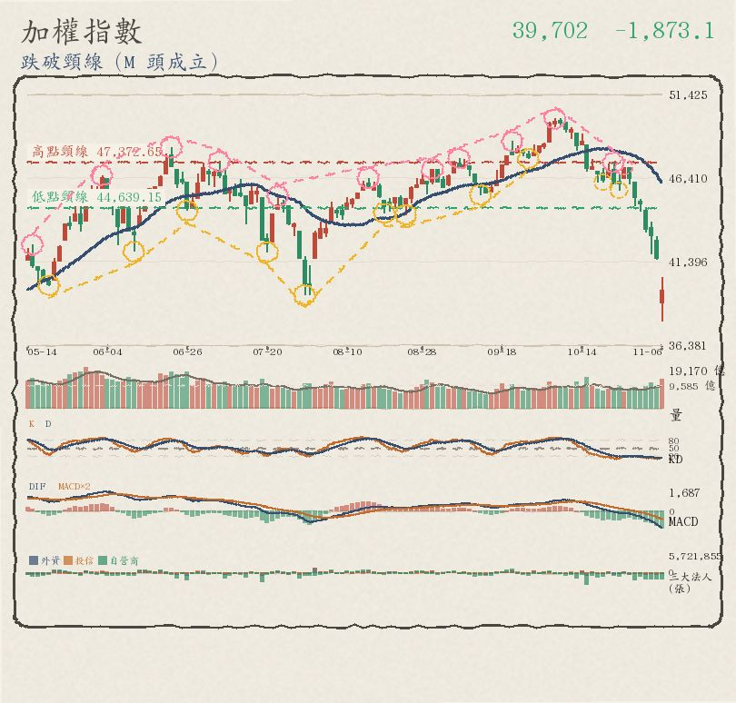
圖說：加權指數日 K（與個股圖相同標記）：黃圈＝轉折低點、粉圈＝轉折高點、虛線小圈＝還沒確認的轉折、藍線＝月線 MA20、水平虛線＝高點／低點頸線。最後一根是資料日當天。
本區塊為公開資料的技術面觀察，不構成投資建議，
不報牌、不預測、不下買賣決策。成交金額為集中市場總成交金額（含 ETF／權證），
與頁首摘要的「上市個股成交金額」口徑不同。標籤是統計，不是評分、也不是推薦。
上市 vs 上櫃（同期快篩）
加權 -4.51% vs 櫃買 -5.43%（同向） → 同向
（兩個市場分開寫，不合併成一個數字；櫃買為 TPEX 公開資料）
櫃買歷史：TPEX 逐日回補 130 根；來源：櫃買中心 www/zh-tw/indexInfo/sectinx（逐日，官方；OpenAPI tpex_index 只回當月）
（TPEX OpenAPI 只回當月，故逐日回補；歷史不足就不算該條均線並標「資料不足」，不用錯數字）
近 20 個交易日大盤狀態回溯（最新在上）（點開看逐日主狀態／量比／量價象限）
用同一支程式回算最近 20 個交易日（主狀態 S1~S8 與量比 20 皆為當日收盤當時的判定，
不是事後調整）；量比 20 未公布的日子寫「—」。
好條件最多的（前 10）
不好條件最多的（前 10）
好條件（7 項）：站上月線、月線向上、底底高、頭頭高、突破頸線、攻擊量（量增＋上漲）、守住今日高檔（距今日高點 1% 內）。
不好條件（7 項）：跌破前低、今日下跌、相對大盤弱、在月線之下、貼近今日低點（1% 內）、跌破昨日低點、月線下彎。
兩邊都是同一組日線資料＋盤中即時價算出來的「符合項目數」，只是把方向相反的條件分開數；
條件數不是評分或推薦，不構成投資建議。
盤中爆量（估量比 ≥ 1.5）（25 上市 19／上櫃 6）
跌破前低（線型轉弱）（59 上市 42／上櫃 17）
今日疲弱（跌幅前 10）（10 上市 7／上櫃 3）
逐檔（70 檔，依盤中成交金額排序）
台積電 2330 上市
2260 +125.0（+5.85%）
區間或轉弱 盤中成交值 685.25 億・全榜第 1 名（上市第 1 名）・相對大盤 +0.03
好條件 1/7：攻擊量（量增＋上漲）
不好條件 3/7：跌破前低、在月線之下、月線下彎
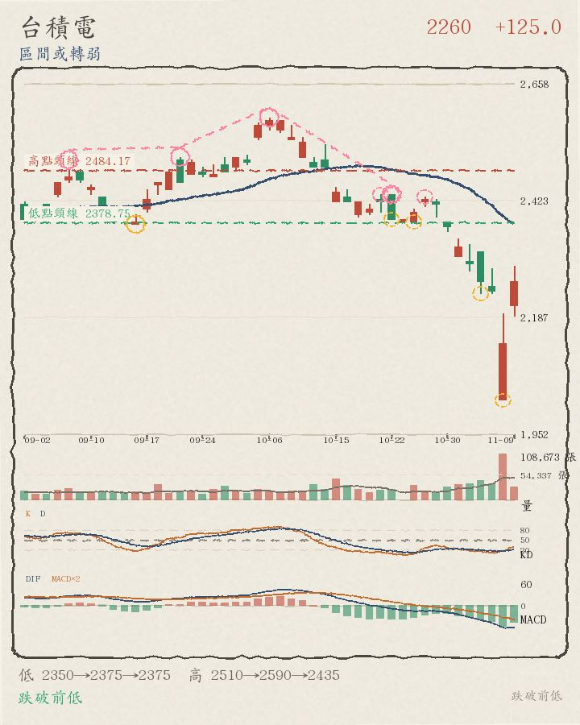
12:31 盤中 2260（+5.85%），比加權指數強 0.03 個百分點、跌破月線 2390.75，離高點頸線 2484.17 還差 9.0%，轉折還沒走出明顯方向。
- 月線位置：現價 2260 在月線 2390.75 之下（-5.5%）；5 日線 2252 也在月線之下（短均在下）；月線向下
- 量能：以已過交易時間推估，今天成交量約是 20 日均量的 1.38 倍（量增），比 20 日均量大不少；上漲又量增，量價配合
- 關鍵價位：已跌破前一個轉折低點；高點頸線 2484.17 還在現價上方 9.0%；前一交易日高點 2195（高於 3.0%）；今天盤中高點 2290（低於 1.3%）；今天盤中低點 2190（高於 3.2%）
- 轉折結構：低點 2350、2375、2375 與高點 2510、2590、2435 都沒有明顯遞增，屬於區間震盪或轉弱；還沒確認的轉折低點 11-04 2235、11-06 2020；還沒確認的轉折高點 10-22 2435、10-28 2430（圖上虛線小圈）
聯發科 2454 上市
3725 +335.0（+9.88%）
底部墊高、未過前高 盤中成交值 327.43 億・全榜第 2 名（上市第 2 名）・相對大盤 +4.06
好條件 2/7：底底高、攻擊量（量增＋上漲）
不好條件 3/7：跌破前低、在月線之下、月線下彎
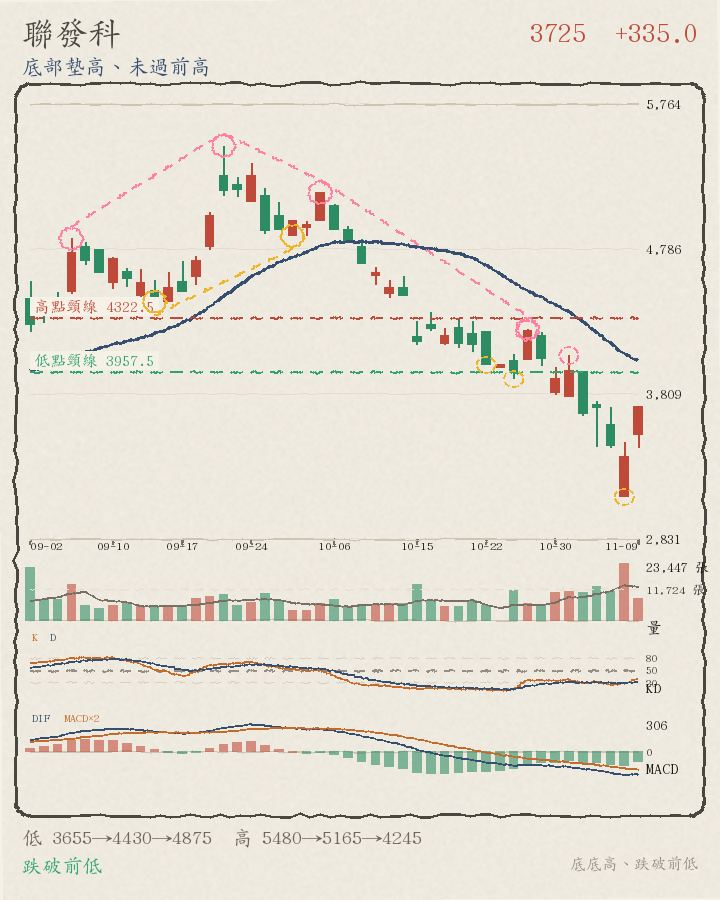
12:31 盤中 3725（+9.88%），比加權指數強 4.06 個百分點、跌破月線 4080.5，離高點頸線 4322.5 還差 13.8%，底部還在墊高（但高點沒同步創高）。
- 月線位置：現價 3725 在月線 4080.5 之下（-8.7%）；5 日線 3642 也在月線之下（短均在下）；月線向下
- 量能：以已過交易時間推估，今天成交量約是 20 日均量的 1.30 倍（量增），比 20 日均量大不少；上漲又量增，量價配合
- 關鍵價位：已跌破前一個轉折低點；高點頸線 4322.5 還在現價上方 13.8%；前一交易日高點 3480（高於 7.0%）；今天盤中高點 3725（高於 0.0%）；今天盤中低點 3450（高於 8.0%）
- 轉折結構：低點 3655、4430、4875 墊高（底底高），但高點 5480、5165、4245 沒有同步創高；還沒確認的轉折低點 10-27 3910、11-06 3115；還沒確認的轉折高點 10-28 4245、11-02 4070（圖上虛線小圈）
欣興 3037 上市
762 +35.0（+4.81%）
底部墊高、未過前高 盤中成交值 262.63 億・全榜第 3 名（上市第 3 名）・相對大盤 -1.01
好條件 2/7：底底高、攻擊量（量增＋上漲）
不好條件 4/7：跌破前低、相對大盤弱、在月線之下、月線下彎
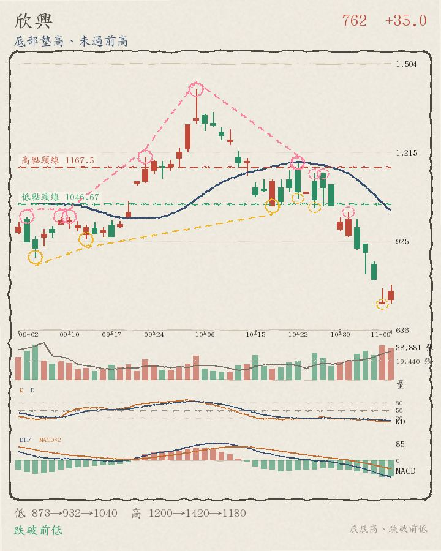
12:31 盤中 762（+4.81%），比加權指數弱 1.01 個百分點、跌破月線 1050.15，離高點頸線 1167.5 還差 34.7%，底部還在墊高（但高點沒同步創高）。
- 月線位置：現價 762 在月線 1050.15 之下（-27.4%）；5 日線 862.8 也在月線之下（短均在下）；月線向下
- 量能：以已過交易時間推估，今天成交量約是 20 日均量的 2.33 倍（爆量），比 20 日均量大不少；上漲又量增，量價配合
- 關鍵價位：已跌破前一個轉折低點；高點頸線 1167.5 還在現價上方 34.7%；前一交易日高點 771（低於 1.2%）；今天盤中高點 782（低於 2.6%）；今天盤中低點 722（高於 5.5%）
- 轉折結構：低點 873、932、1040 墊高（底底高），但高點 1200、1420、1180 沒有同步創高；還沒確認的轉折低點 10-27 1035、11-06 720；還沒確認的轉折高點 10-28 1145、11-02 1020（圖上虛線小圈）
景碩 3189 上市
693 +22.0（+3.28%）
底部墊高、未過前高 盤中成交值 256.67 億・全榜第 4 名（上市第 4 名）・相對大盤 -2.54
好條件 2/7：底底高、攻擊量（量增＋上漲）
不好條件 4/7：跌破前低、相對大盤弱、在月線之下、月線下彎
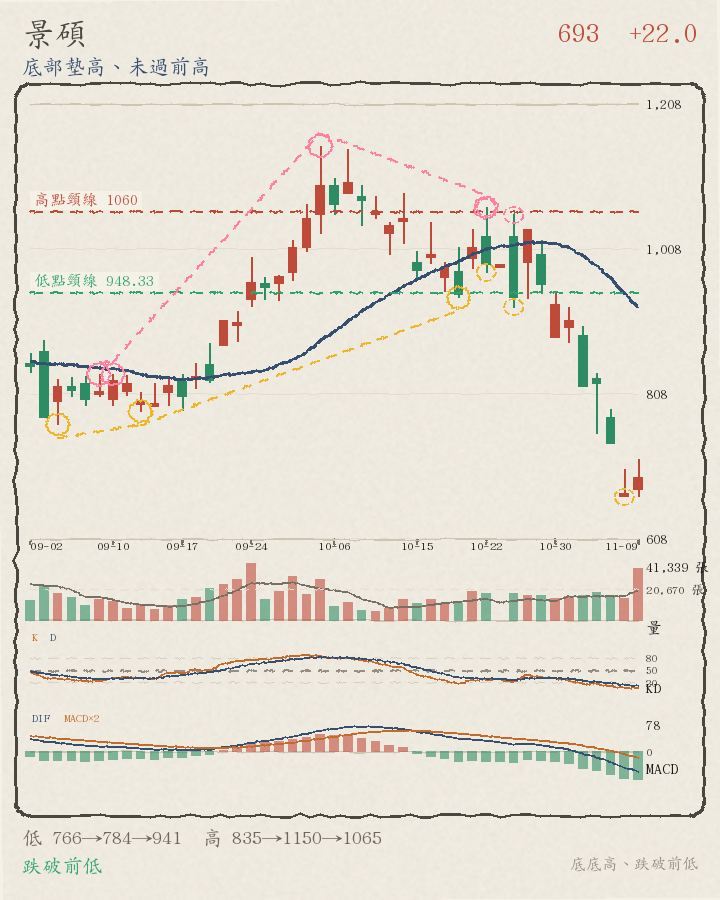
12:31 盤中 693（+3.28%），比加權指數弱 2.54 個百分點、跌破月線 947.1，離高點頸線 1060 還差 34.6%，底部還在墊高（但高點沒同步創高）。
- 月線位置：現價 693 在月線 947.1 之下（-26.8%）；5 日線 792.4 也在月線之下（短均在下）；月線向下
- 量能：以已過交易時間推估，今天成交量約是 20 日均量的 3.17 倍（爆量），比 20 日均量大不少；上漲又量增，量價配合
- 關鍵價位：已跌破前一個轉折低點；高點頸線 1060 還在現價上方 34.6%；前一交易日高點 704（低於 1.6%）；今天盤中高點 718（低於 3.5%）；今天盤中低點 666（高於 4.1%）
- 轉折結構：低點 766、784、941 墊高（底底高），但高點 835、1150、1065 沒有同步創高；還沒確認的轉折低點 10-27 928、11-06 666；還沒確認的轉折高點 10-22 1065、10-27 1055（圖上虛線小圈）
創意 3443 上市
6725 +520.0（+8.38%）
區間或轉弱 盤中成交值 207.2 億・全榜第 5 名（上市第 5 名）・相對大盤 +2.56
好條件 2/7：攻擊量（量增＋上漲）、守住今日高檔（距今日高點 1% 內）
不好條件 3/7：跌破前低、在月線之下、月線下彎
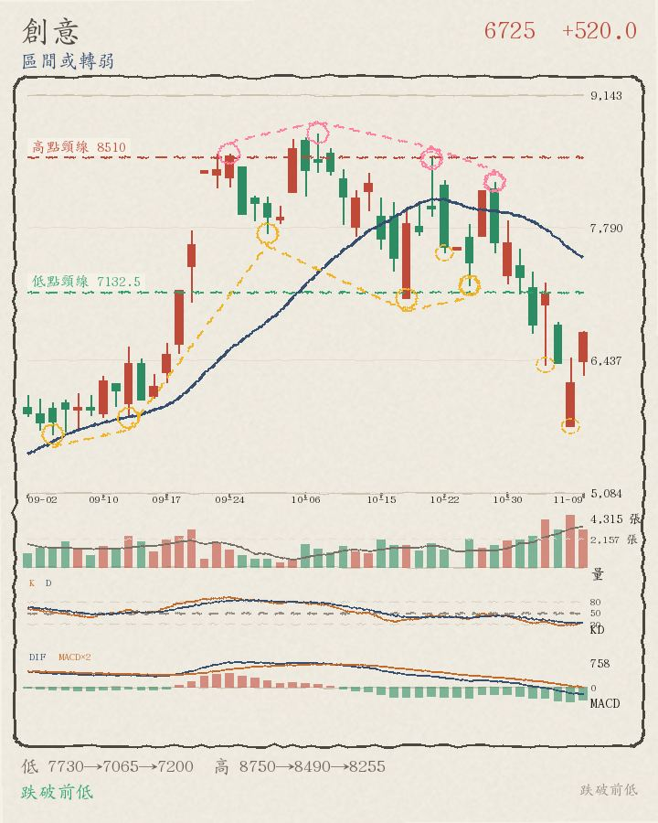
12:31 盤中 6725（+8.38%），比加權指數強 2.56 個百分點、跌破月線 7568.75，離高點頸線 8510 還差 21.0%，轉折還沒走出明顯方向。
- 月線位置：現價 6725 在月線 7568.75 之下（-11.2%）；5 日線 6761 也在月線之下（短均在下）；月線向下
- 量能：以已過交易時間推估，今天成交量約是 20 日均量的 2.04 倍（爆量），比 20 日均量大不少；上漲又量增，量價配合
- 關鍵價位：已跌破前一個轉折低點；高點頸線 8510 還在現價上方 21.0%；前一交易日高點 6460（高於 4.1%）；今天盤中高點 6735（低於 0.1%）；今天盤中低點 6285（高於 7.0%）
- 轉折結構：低點 7730、7065、7200 與高點 8750、8490、8255 都沒有明顯遞增，屬於區間震盪或轉弱；還沒確認的轉折低點 11-04 6390、11-06 5765；還沒確認的轉折高點 10-21 8490、10-29 8255（圖上虛線小圈）
健策 3653 上市
5645 +420.0（+8.04%）
區間或轉弱 盤中成交值 194.81 億・全榜第 6 名（上市第 6 名）・相對大盤 +2.22
好條件 1/7：攻擊量（量增＋上漲）
不好條件 3/7：跌破前低、在月線之下、月線下彎
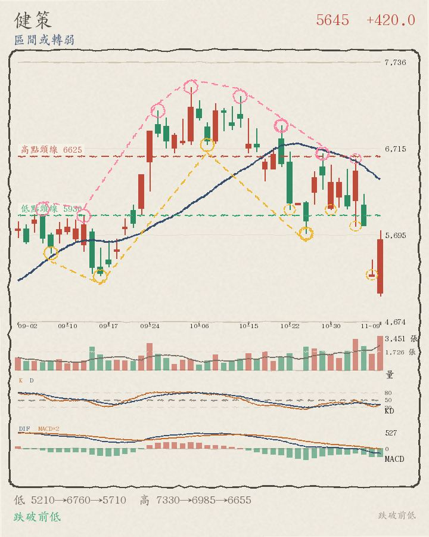
12:31 盤中 5645（+8.04%），比加權指數強 2.22 個百分點、跌破月線 6427.75，離高點頸線 6625 還差 14.8%，轉折還沒走出明顯方向。
- 月線位置：現價 5645 在月線 6427.75 之下（-12.2%）；5 日線 5967 也在月線之下（短均在下）；月線向下
- 量能：以已過交易時間推估，今天成交量約是 20 日均量的 2.79 倍（爆量），比 20 日均量大不少；上漲又量增，量價配合
- 關鍵價位：已跌破前一個轉折低點；高點頸線 6625 還在現價上方 14.8%；前一交易日高點 5400（高於 4.5%）；今天盤中高點 5745（低於 1.7%）；今天盤中低點 4970（高於 13.6%）
- 轉折結構：低點 5210、6760、5710 與高點 7330、6985、6655 都沒有明顯遞增，屬於區間震盪或轉弱；還沒確認的轉折低點 11-04 5800、11-06 5225；還沒確認的轉折高點 10-29 6655、11-04 6595（圖上虛線小圈）
台達電 2308 上市
1160 +105.0（+9.95%）
高點墊高、底部不穩 盤中成交值 180.35 億・全榜第 7 名（上市第 7 名）・相對大盤 +4.13
好條件 2/7：頭頭高、攻擊量（量增＋上漲）
不好條件 3/7：跌破前低、在月線之下、月線下彎
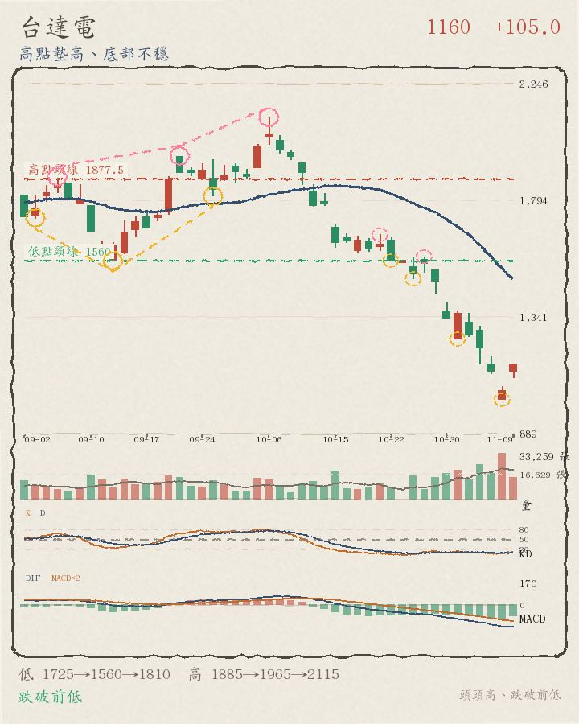
12:31 盤中 1160（+9.95%），比加權指數強 4.13 個百分點、跌破月線 1529.25，離高點頸線 1877.5 還差 38.2%，高點還在墊高（但底部沒同步墊高）。
- 月線位置：現價 1160 在月線 1529.25 之下（-24.1%）；5 日線 1206 也在月線之下（短均在下）；月線向下
- 量能：以已過交易時間推估，今天成交量約是 20 日均量的 1.56 倍（爆量），比 20 日均量大不少；上漲又量增，量價配合
- 關鍵價位：已跌破前一個轉折低點；高點頸線 1877.5 還在現價上方 38.2%；前一交易日高點 1070（高於 8.4%）；今天盤中高點 1160（高於 0.0%）；今天盤中低點 1105（高於 5.0%）
- 轉折結構：高點 1885、1965、2115 墊高（頭頭高），但低點 1725、1560、1810 沒有同步墊高；還沒確認的轉折低點 11-02 1255、11-06 1020；還沒確認的轉折高點 10-21 1660、10-28 1575（圖上虛線小圈）
聯電 2303 上市
98.1 +6.1（+6.63%）
底部墊高、未過前高 盤中成交值 170.28 億・全榜第 8 名（上市第 8 名）・相對大盤 +0.81
好條件 2/7：底底高、攻擊量（量增＋上漲）
不好條件 3/7：跌破前低、在月線之下、月線下彎
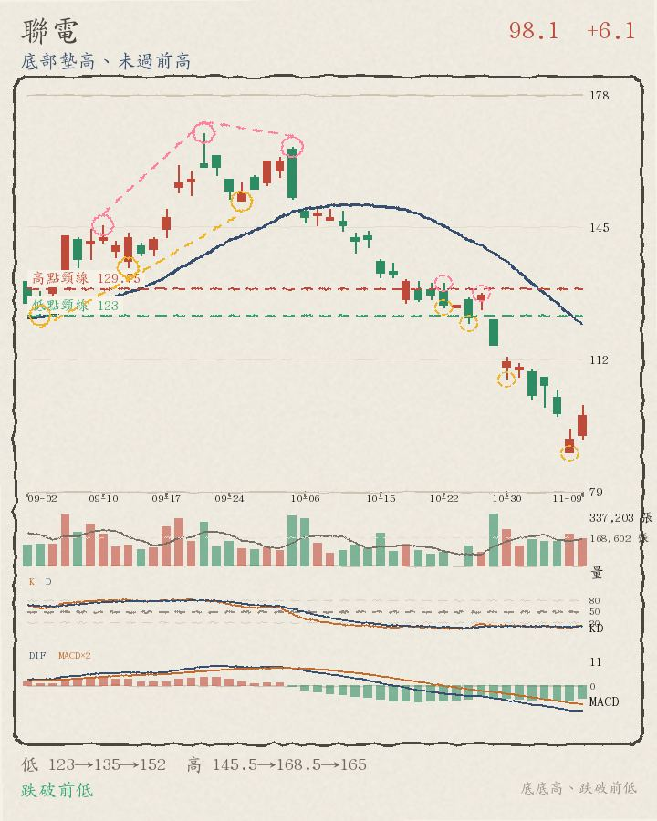
12:31 盤中 98.1（+6.63%），比加權指數強 0.81 個百分點、跌破月線 123.345，離高點頸線 129.75 還差 24.4%，底部還在墊高（但高點沒同步創高）。
- 月線位置：現價 98.1 在月線 123.345 之下（-20.5%）；5 日線 101.78 也在月線之下（短均在下）；月線向下
- 量能：以已過交易時間推估，今天成交量約是 20 日均量的 1.59 倍（爆量），比 20 日均量大不少；上漲又量增，量價配合
- 關鍵價位：已跌破前一個轉折低點；高點頸線 129.75 還在現價上方 24.4%；前一交易日高點 94.6（高於 3.7%）；今天盤中高點 100.5（低於 2.4%）；今天盤中低點 92（高於 6.6%）
- 轉折結構：低點 123、135、151.5 墊高（底底高），但高點 145.5、168.5、165 沒有同步創高；還沒確認的轉折低點 10-30 107、11-06 88.6；還沒確認的轉折高點 10-22 131、10-28 128.5（圖上虛線小圈）
台光電 2383 上市
4105 +285.0（+7.46%）
底部墊高、未過前高 盤中成交值 155.83 億・全榜第 9 名（上市第 9 名）・相對大盤 +1.64
好條件 2/7：底底高、攻擊量（量增＋上漲）
不好條件 3/7：跌破前低、在月線之下、月線下彎
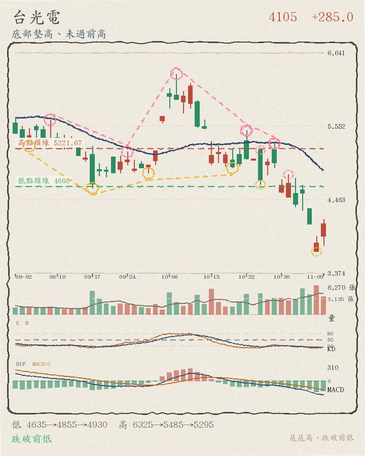
12:31 盤中 4105（+7.46%），比加權指數強 1.64 個百分點、跌破月線 4986.75，離高點頸線 5221.67 還差 21.4%，底部還在墊高（但高點沒同步創高）。
- 月線位置：現價 4105 在月線 4986.75 之下（-17.7%）；5 日線 4315 也在月線之下（短均在下）；月線向下
- 量能：以已過交易時間推估，今天成交量約是 20 日均量的 1.51 倍（爆量），比 20 日均量大不少；上漲又量增，量價配合
- 關鍵價位：已跌破前一個轉折低點；高點頸線 5221.67 還在現價上方 21.4%；前一交易日高點 3920（高於 4.7%）；今天盤中高點 4170（低於 1.6%）；今天盤中低點 3785（高於 8.5%）
- 轉折結構：低點 4635、4855、4930 墊高（底底高），但高點 6325、5485、5295 沒有同步創高；還沒確認的轉折低點 10-27 4685、11-06 3690；還沒確認的轉折高點 10-29 5295、11-02 4835（圖上虛線小圈）
日月光投控 3711 上市
571 +44.0（+8.35%）
區間或轉弱 盤中成交值 133.2 億・全榜第 10 名（上市第 10 名）・相對大盤 +2.53
好條件 1/7：攻擊量（量增＋上漲）
不好條件 3/7：跌破前低、在月線之下、月線下彎
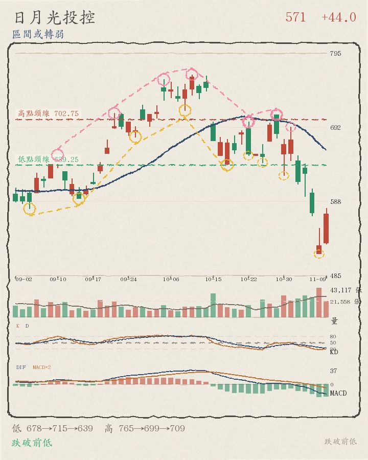
12:31 盤中 571（+8.35%），比加權指數強 2.53 個百分點、跌破月線 668.6，離高點頸線 702.75 還差 18.7%，轉折還沒走出明顯方向。
- 月線位置：現價 571 在月線 668.6 之下（-14.6%）；5 日線 603.2 也在月線之下（短均在下）；月線向下
- 量能：以已過交易時間推估，今天成交量約是 20 日均量的 1.52 倍（爆量），比 20 日均量大不少；上漲又量增，量價配合
- 關鍵價位：已跌破前一個轉折低點；高點頸線 702.75 還在現價上方 18.7%；前一交易日高點 551（高於 3.6%）；今天盤中高點 579（低於 1.4%）；今天盤中低點 529（高於 7.9%）
- 轉折結構：低點 678、715、639 與高點 765、699、709 都沒有明顯遞增，屬於區間震盪或轉弱；還沒確認的轉折低點 10-30 624、11-06 515；還沒確認的轉折高點 10-29 709、11-02 692（圖上虛線小圈）
台燿 6274 上櫃
957 +51.0（+5.63%）
區間或轉弱 盤中成交值 130.2 億・全榜第 11 名（上櫃第 1 名）・相對大盤 -0.19
好條件 1/7：攻擊量（量增＋上漲）
不好條件 4/7：跌破前低、相對大盤弱、在月線之下、月線下彎
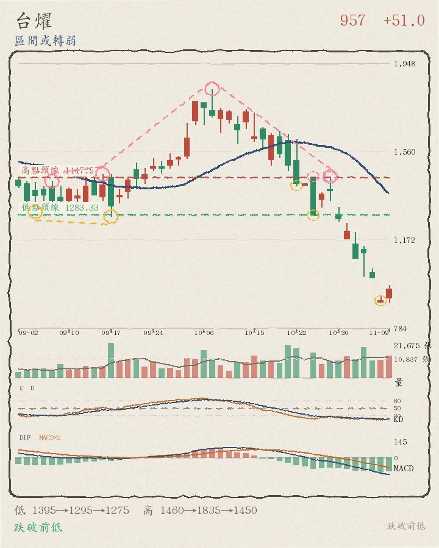
12:31 盤中 957（+5.63%），比加權指數弱 0.19 個百分點、跌破月線 1413.05，離高點頸線 1447.5 還差 33.9%，轉折還沒走出明顯方向。
- 月線位置：現價 957 在月線 1413.05 之下（-32.3%）；5 日線 1065.2 也在月線之下（短均在下）；月線向下
- 量能：以已過交易時間推估，今天成交量約是 20 日均量的 1.50 倍（爆量），比 20 日均量大不少；上漲又量增，量價配合
- 關鍵價位：已跌破前一個轉折低點；高點頸線 1447.5 還在現價上方 33.9%；前一交易日高點 928（高於 3.1%）；今天盤中高點 972（低於 1.5%）；今天盤中低點 897（高於 6.7%）
- 轉折結構：低點 1395、1295、1275 與高點 1460、1835、1450 都沒有明顯遞增，屬於區間震盪或轉弱；還沒確認的轉折低點 10-27 1280、11-06 905；還沒確認的轉折高點 10-27 1450、10-29 1450（圖上虛線小圈）
南亞 1303 上市
263 +23.5（+9.81%）
區間或轉弱 盤中成交值 127.46 億・全榜第 12 名（上市第 11 名）・相對大盤 +3.99
好條件 0/7：無
不好條件 3/7：跌破前低、在月線之下、月線下彎
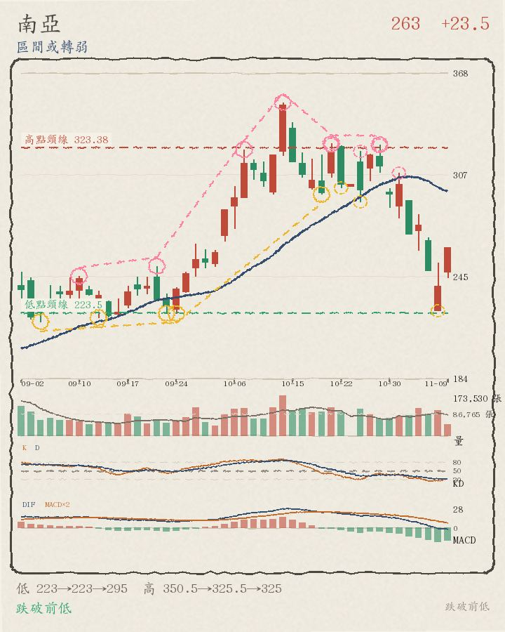
12:31 盤中 263（+9.81%），比加權指數強 3.99 個百分點、跌破月線 299.3，離高點頸線 323.38 還差 18.7%，轉折還沒走出明顯方向。
- 月線位置：現價 263 在月線 299.3 之下（-12.1%）；5 日線 267.4 也在月線之下（短均在下）；月線向下
- 量能：以已過交易時間推估，今天成交量約是 20 日均量的 0.61 倍（量縮），比 20 日均量少很多；上漲但量縮，量價背離
- 關鍵價位：已跌破前一個轉折低點；高點頸線 323.38 還在現價上方 18.7%；前一交易日高點 253.5（高於 3.7%）；今天盤中高點 263（高於 0.0%）；今天盤中低點 244.5（高於 7.6%）
- 轉折結構：低點 223、223、295 與高點 350.5、325.5、325 都沒有明顯遞增，屬於區間震盪或轉弱；還沒確認的轉折低點 10-27 290.5、11-06 224.5；還沒確認的轉折高點 10-29 325、11-02 308（圖上虛線小圈）
南亞科 2408 上市
374.5 +31.0（+9.02%）
區間或轉弱 盤中成交值 120.8 億・全榜第 13 名（上市第 12 名）・相對大盤 +3.20
好條件 1/7：守住今日高檔（距今日高點 1% 內）
不好條件 3/7：跌破前低、在月線之下、月線下彎
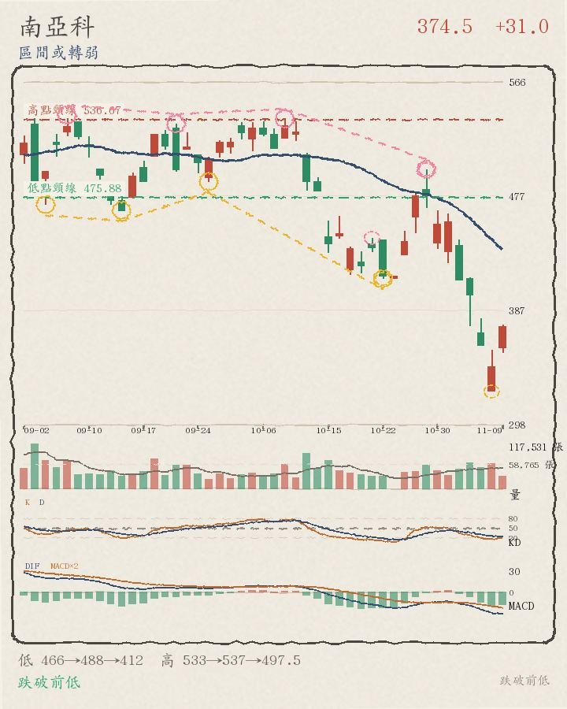
12:31 盤中 374.5（+9.02%），比加權指數強 3.20 個百分點、跌破月線 442.85，離高點頸線 536.67 還差 30.2%，轉折還沒走出明顯方向。
- 月線位置：現價 374.5 在月線 442.85 之下（-15.4%）；5 日線 394.1 也在月線之下（短均在下）；月線向下
- 量能：以已過交易時間推估，今天成交量約是 20 日均量的 0.84 倍（量平），比 20 日均量少很多；上漲但量縮，量價背離
- 關鍵價位：已跌破前一個轉折低點；高點頸線 536.67 還在現價上方 30.2%；前一交易日高點 356（高於 5.2%）；今天盤中高點 376（低於 0.4%）；今天盤中低點 354.5（高於 5.6%）
- 轉折結構：低點 465.5、488、412 與高點 533、537、497.5 都沒有明顯遞增，屬於區間震盪或轉弱；還沒確認的轉折低點 10-22 412、11-06 324；還沒確認的轉折高點 10-21 444、10-29 497.5（圖上虛線小圈）
臻鼎-KY 4958 上市
399 +26.0（+6.97%）
底部墊高、未過前高 盤中成交值 105 億・全榜第 14 名（上市第 13 名）・相對大盤 +1.15
好條件 2/7：底底高、攻擊量（量增＋上漲）
不好條件 3/7：跌破前低、在月線之下、月線下彎
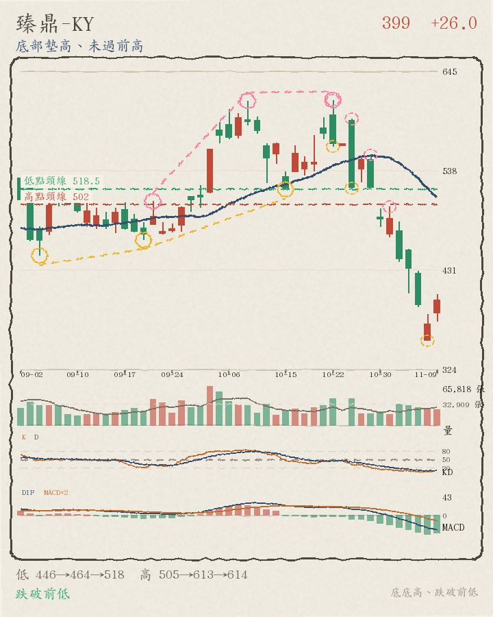
12:31 盤中 399（+6.97%），比加權指數強 1.15 個百分點、跌破月線 519，離高點頸線 502 還差 20.5%，底部還在墊高（但高點沒同步創高）。
- 月線位置：現價 399 在月線 519 之下（-23.1%）；5 日線 426 也在月線之下（短均在下）；月線向下
- 量能：以已過交易時間推估，今天成交量約是 20 日均量的 1.19 倍（量增），比 20 日均量大不少；上漲又量增，量價配合
- 關鍵價位：已跌破前一個轉折低點；高點頸線 502 還在現價上方 20.5%；前一交易日高點 383（高於 4.2%）；今天盤中高點 405（低於 1.5%）；今天盤中低點 376（高於 6.1%）
- 轉折結構：低點 446.5、463.5、518 墊高（底底高），但高點 505、613、614 沒有同步創高；還沒確認的轉折低點 10-27 519、11-06 355；還沒確認的轉折高點 10-29 555、11-02 499（圖上虛線小圈）
鴻海 2317 上市
243.5 +19.0（+8.46%）
區間或轉弱 盤中成交值 95.77 億・全榜第 15 名（上市第 14 名）・相對大盤 +2.64
好條件 2/7：站上月線、攻擊量（量增＋上漲）
不好條件 1/7：月線下彎
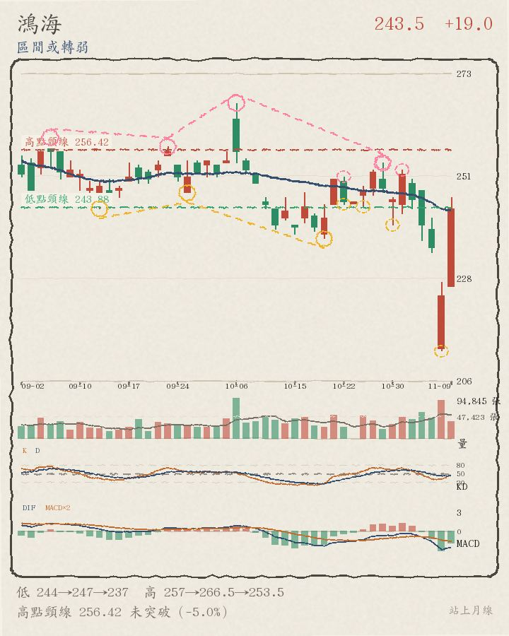
12:31 盤中 243.5（+8.46%），比加權指數強 2.64 個百分點、站上月線 243.475，離高點頸線 256.42 還差 5.0%，轉折還沒走出明顯方向。
- 月線位置：現價 243.5 在月線 243.475 之上（+0.0%）；5 日線 239.2 也在月線之下（短均在下）；月線向下
- 量能：以已過交易時間推估，今天成交量約是 20 日均量的 1.23 倍（量增），比 20 日均量大不少；上漲又量增，量價配合
- 關鍵價位：高點頸線 256.42 還沒突破，差 5.0%；前一交易日高點 227.5（高於 7.0%）；今天盤中高點 246（低於 1.0%）；今天盤中低點 226.5（高於 7.5%）
- 轉折結構：低點 243.5、247、237 與高點 257、266.5、253.5 都沒有明顯遞增，屬於區間震盪或轉弱；還沒確認的轉折低點 10-30 240、11-06 212.5；還沒確認的轉折高點 10-29 253.5、11-02 252（圖上虛線小圈）
富喬 1815 上櫃
129 +11.5（+9.79%）
底部墊高、未過前高 盤中成交值 88.27 億・全榜第 16 名（上櫃第 2 名）・相對大盤 +3.97
好條件 2/7：月線向上、底底高
不好條件 1/7：在月線之下
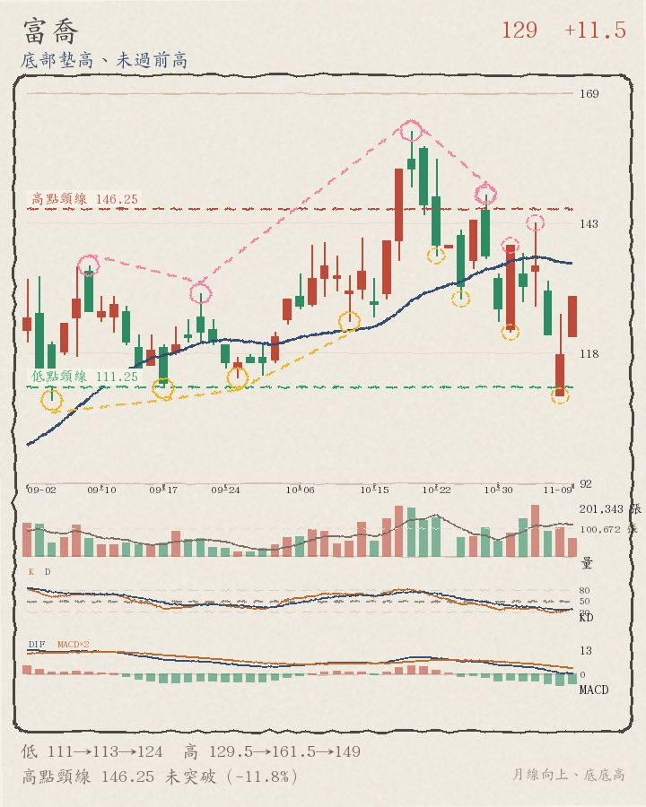
12:31 盤中 129（+9.79%），比加權指數強 3.97 個百分點、跌破月線 135.75，離高點頸線 146.25 還差 11.8%，底部還在墊高（但高點沒同步創高）。
- 月線位置：現價 129 在月線 135.75 之下（-5.0%）；5 日線 128.8 也在月線之下（短均在下）；月線向上
- 量能：以已過交易時間推估，今天成交量約是 20 日均量的 0.76 倍（量平），比 20 日均量少很多；上漲但量縮，量價背離
- 關鍵價位：高點頸線 146.25 還沒突破，差 11.8%；前一交易日高點 125.5（高於 2.8%）；今天盤中高點 129（高於 0.0%）；今天盤中低點 121（高於 6.6%）
- 轉折結構：低點 111、113、124 墊高（底底高），但高點 129.5、161.5、149 沒有同步創高；還沒確認的轉折低點 11-02 122、11-06 109.5；還沒確認的轉折高點 11-02 139、11-04 143.5（圖上虛線小圈）
南電 8046 上市
925 +50.0（+5.71%）
底部墊高、未過前高 盤中成交值 87.5 億・全榜第 17 名（上市第 15 名）・相對大盤 -0.11
好條件 2/7：底底高、攻擊量（量增＋上漲）
不好條件 4/7：跌破前低、相對大盤弱、在月線之下、月線下彎
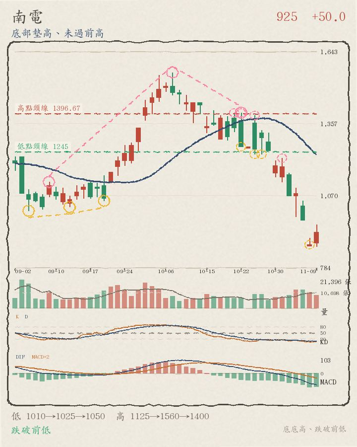
12:31 盤中 925（+5.71%），比加權指數弱 0.11 個百分點、跌破月線 1260.85，離高點頸線 1396.67 還差 33.8%，底部還在墊高（但高點沒同步創高）。
- 月線位置：現價 925 在月線 1260.85 之下（-26.6%）；5 日線 1036.4 也在月線之下（短均在下）；月線向下
- 量能：以已過交易時間推估，今天成交量約是 20 日均量的 1.40 倍（量增），比 20 日均量大不少；上漲又量增，量價配合
- 關鍵價位：已跌破前一個轉折低點；高點頸線 1396.67 還在現價上方 33.8%；前一交易日高點 902（高於 2.5%）；今天盤中高點 955（低於 3.1%）；今天盤中低點 867（高於 6.7%）
- 轉折結構：低點 1010、1025、1050 墊高（底底高），但高點 1125、1560、1400 沒有同步創高；還沒確認的轉折低點 10-28 1235、11-06 875；還沒確認的轉折高點 10-27 1390、11-02 1220（圖上虛線小圈）
信驊 5274 上櫃
11670 +295.0（+2.59%）
區間或轉弱 盤中成交值 80.52 億・全榜第 18 名（上櫃第 3 名）・相對大盤 -3.23
好條件 1/7：攻擊量（量增＋上漲）
不好條件 4/7：跌破前低、相對大盤弱、在月線之下、月線下彎
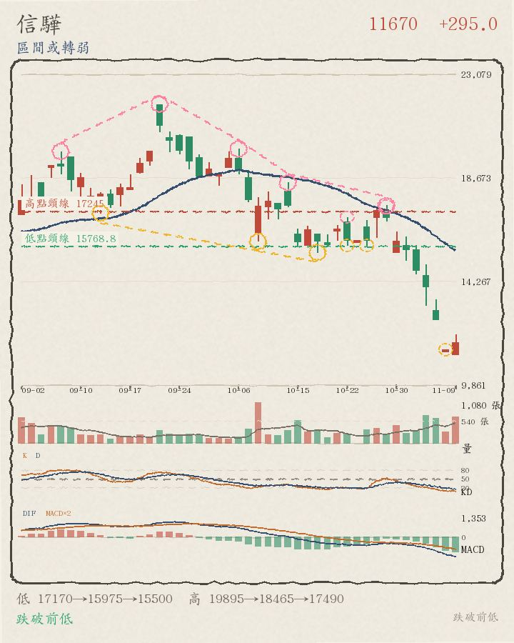
12:31 盤中 11670（+2.59%），比加權指數弱 3.23 個百分點、跌破月線 15876.5，離高點頸線 17245 還差 32.3%，轉折還沒走出明顯方向。
- 月線位置：現價 11670 在月線 15876.5 之下（-26.5%）；5 日線 13680 也在月線之下（短均在下）；月線向下
- 量能：以已過交易時間推估，今天成交量約是 20 日均量的 2.25 倍（爆量），比 20 日均量大不少；上漲又量增，量價配合
- 關鍵價位：已跌破前一個轉折低點；高點頸線 17245 還在現價上方 32.3%；前一交易日高點 11375（高於 2.6%）；今天盤中高點 11990（低於 2.7%）；今天盤中低點 11140（高於 4.8%）
- 轉折結構：低點 17170、15975、15500 與高點 19895、18465、17490 都沒有明顯遞增，屬於區間震盪或轉弱；還沒確認的轉折低點 10-27 15800、11-06 11375；還沒確認的轉折高點 10-22 17000、10-29 17490（圖上虛線小圈）
玉晶光 3406 上市
842 +17.0（+2.06%）
區間或轉弱 盤中成交值 78.44 億・全榜第 19 名（上市第 16 名）・相對大盤 -3.76
好條件 1/7：攻擊量（量增＋上漲）
不好條件 4/7：跌破前低、相對大盤弱、在月線之下、月線下彎
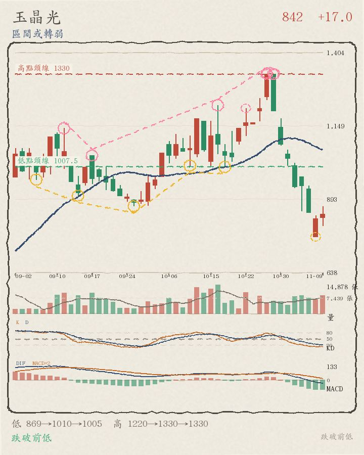
12:31 盤中 842（+2.06%），比加權指數弱 3.76 個百分點、跌破月線 1076.05，離高點頸線 1330 還差 36.7%，轉折還沒走出明顯方向。
- 月線位置：現價 842 在月線 1076.05 之下（-21.8%）；5 日線 916.2 也在月線之下（短均在下）；月線向下
- 量能：以已過交易時間推估，今天成交量約是 20 日均量的 1.50 倍（爆量），比 20 日均量大不少；上漲又量增，量價配合
- 關鍵價位：已跌破前一個轉折低點；高點頸線 1330 還在現價上方 36.7%；前一交易日高點 836（高於 0.7%）；今天盤中高點 868（低於 3.0%）；今天盤中低點 800（高於 5.2%）
- 轉折結構：低點 869、1010、1005 與高點 1220、1330、1330 都沒有明顯遞增，屬於區間震盪或轉弱；還沒確認的轉折低點 11-06 762；還沒確認的轉折高點 10-28 1330、10-29 1330（圖上虛線小圈）
金像電 2368 上市
894 +81.0（+9.96%）
區間或轉弱 盤中成交值 76.89 億・全榜第 20 名（上市第 17 名）・相對大盤 +4.14
好條件 0/7：無
不好條件 3/7：跌破前低、在月線之下、月線下彎
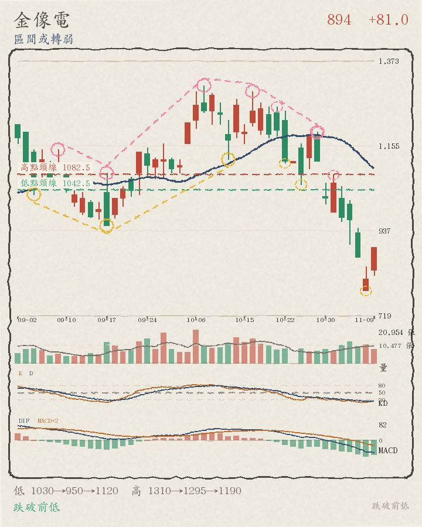
12:31 盤中 894（+9.96%），比加權指數強 4.14 個百分點、跌破月線 1116，離高點頸線 1082.5 還差 17.4%，轉折還沒走出明顯方向。
- 月線位置：現價 894 在月線 1116 之下（-19.9%）；5 日線 935 也在月線之下（短均在下）；月線向下
- 量能：以已過交易時間推估，今天成交量約是 20 日均量的 1.04 倍（量平），跟 20 日均量差不多
- 關鍵價位：已跌破前一個轉折低點；高點頸線 1082.5 還在現價上方 17.4%；前一交易日高點 844（高於 5.9%）；今天盤中高點 894（高於 0.0%）；今天盤中低點 821（高於 8.9%）
- 轉折結構：低點 1030、950、1120 與高點 1310、1295、1190 都沒有明顯遞增，屬於區間震盪或轉弱；還沒確認的轉折低點 10-27 1055、11-06 782；還沒確認的轉折高點 10-29 1190、11-02 1080（圖上虛線小圈）
京元電子 2449 上市
213 +7.0（+3.40%）
區間或轉弱 盤中成交值 76.48 億・全榜第 21 名（上市第 18 名）・相對大盤 -2.42
好條件 1/7：攻擊量（量增＋上漲）
不好條件 4/7：跌破前低、相對大盤弱、在月線之下、月線下彎
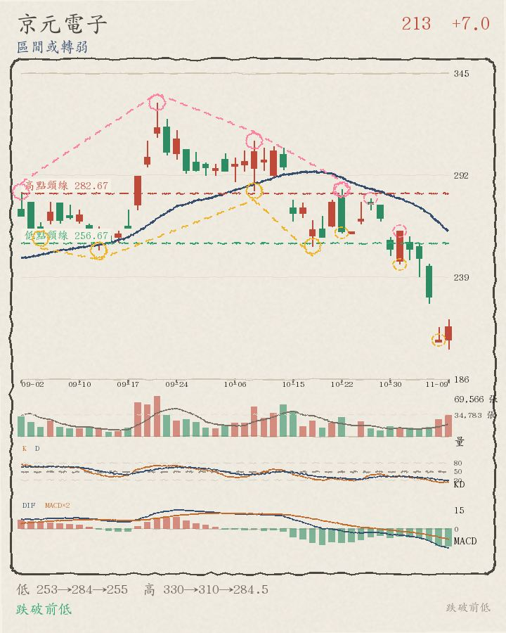
12:31 盤中 213（+3.40%），比加權指數弱 2.42 個百分點、跌破月線 267.4，離高點頸線 282.67 還差 24.6%，轉折還沒走出明顯方向。
- 月線位置：現價 213 在月線 267.4 之下（-20.3%）；5 日線 239.9 也在月線之下（短均在下）；月線向下
- 量能：以已過交易時間推估，今天成交量約是 20 日均量的 1.84 倍（爆量），比 20 日均量大不少；上漲又量增，量價配合
- 關鍵價位：已跌破前一個轉折低點；高點頸線 282.67 還在現價上方 24.6%；前一交易日高點 212.5（高於 0.2%）；今天盤中高點 216.5（低於 1.6%）；今天盤中低點 201（高於 6.0%）
- 轉折結構：低點 253、284、255 與高點 330、310、284.5 都沒有明顯遞增，屬於區間震盪或轉弱；還沒確認的轉折低點 11-02 245.5、11-06 206；還沒確認的轉折高點 10-28 280、11-02 263（圖上虛線小圈）
國巨* 2327 上市
411 +37.0（+9.89%）
區間或轉弱 盤中成交值 65.32 億・全榜第 22 名（上市第 19 名）・相對大盤 +4.07
好條件 0/7：無
不好條件 3/7：跌破前低、在月線之下、月線下彎
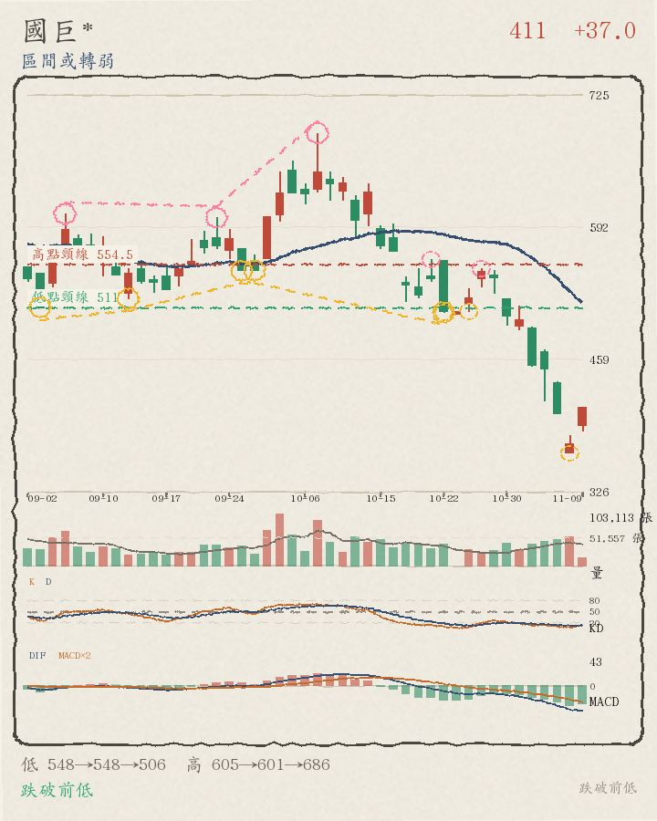
12:31 盤中 411（+9.89%），比加權指數強 4.07 個百分點、跌破月線 527.1，離高點頸線 554.5 還差 25.9%，轉折還沒走出明顯方向。
- 月線位置：現價 411 在月線 527.1 之下（-22.0%）；5 日線 435.8 也在月線之下（短均在下）；月線向下
- 量能：以已過交易時間推估，今天成交量約是 20 日均量的 0.47 倍（量縮），比 20 日均量少很多；上漲但量縮，量價背離
- 關鍵價位：已跌破前一個轉折低點；高點頸線 554.5 還在現價上方 25.9%；前一交易日高點 382（高於 7.6%）；今天盤中高點 411（高於 0.0%）；今天盤中低點 387（高於 6.2%）
- 轉折結構：低點 548、548、506 與高點 605、601、686 都沒有明顯遞增，屬於區間震盪或轉弱；還沒確認的轉折低點 10-27 507、11-06 364.5；還沒確認的轉折高點 10-21 559、10-28 550（圖上虛線小圈）
奇鋐 3017 上市
2540 +230.0（+9.96%）
區間或轉弱 盤中成交值 64.21 億・全榜第 23 名（上市第 20 名）・相對大盤 +4.14
好條件 1/7：攻擊量（量增＋上漲）
不好條件 3/7：跌破前低、在月線之下、月線下彎
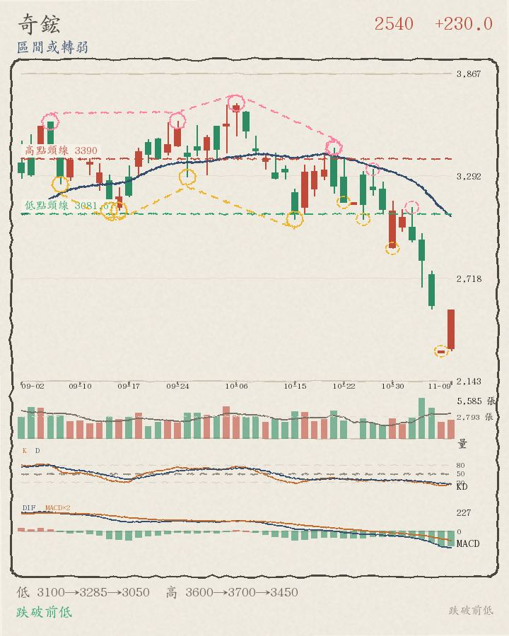
12:31 盤中 2540（+9.96%），比加權指數強 4.14 個百分點、跌破月線 3111.25，離高點頸線 3390 還差 25.1%，轉折還沒走出明顯方向。
- 月線位置：現價 2540 在月線 3111.25 之下（-18.4%）；5 日線 2738 也在月線之下（短均在下）；月線向下
- 量能：以已過交易時間推估，今天成交量約是 20 日均量的 1.12 倍（量增），比 20 日均量大一些；上漲又量增，量價配合
- 關鍵價位：已跌破前一個轉折低點；高點頸線 3390 還在現價上方 25.1%；前一交易日高點 2310（高於 10.0%）；今天盤中高點 2540（高於 0.0%）；今天盤中低點 2310（高於 10.0%）
- 轉折結構：低點 3100、3285、3050 與高點 3600、3700、3450 都沒有明顯遞增，屬於區間震盪或轉弱；還沒確認的轉折低點 10-30 2885、11-06 2310；還沒確認的轉折高點 10-28 3330、11-03 3115（圖上虛線小圈）
雙鴻 3324 上櫃
1120 +65.0（+6.16%）
區間或轉弱 盤中成交值 63.28 億・全榜第 24 名（上櫃第 4 名）・相對大盤 +0.34
好條件 1/7：攻擊量（量增＋上漲）
不好條件 3/7：跌破前低、在月線之下、月線下彎
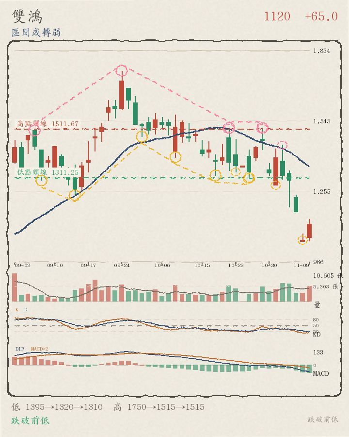
12:31 盤中 1120（+6.16%），比加權指數強 0.34 個百分點、跌破月線 1376.75，離高點頸線 1511.67 還差 25.9%，轉折還沒走出明顯方向。
- 月線位置：現價 1120 在月線 1376.75 之下（-18.6%）；5 日線 1248 也在月線之下（短均在下）；月線向下
- 量能：以已過交易時間推估，今天成交量約是 20 日均量的 1.88 倍（爆量），比 20 日均量大不少；上漲又量增，量價配合
- 關鍵價位：已跌破前一個轉折低點；高點頸線 1511.67 還在現價上方 25.9%；前一交易日高點 1080（高於 3.7%）；今天盤中高點 1140（低於 1.8%）；今天盤中低點 1050（高於 6.7%）
- 轉折結構：低點 1395、1320、1310 與高點 1750、1515、1515 都沒有明顯遞增，屬於區間震盪或轉弱；還沒確認的轉折低點 11-02 1280、11-06 1055；還沒確認的轉折高點 10-29 1515、11-03 1445（圖上虛線小圈）
穩懋 3105 上櫃
446.5 +40.5（+9.98%）
區間或轉弱 盤中成交值 61.13 億・全榜第 25 名（上櫃第 5 名）・相對大盤 +4.16
好條件 0/7：無
不好條件 3/7：跌破前低、在月線之下、月線下彎
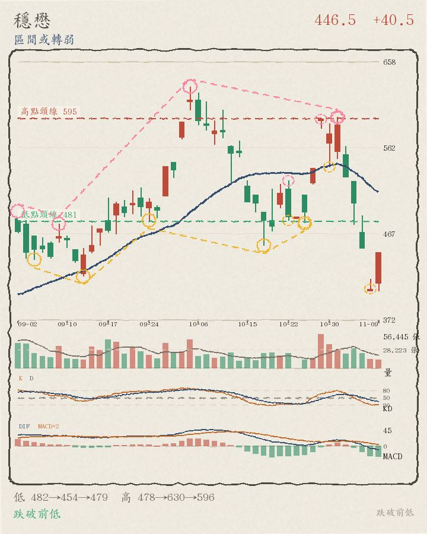
12:31 盤中 446.5（+9.98%），比加權指數強 4.16 個百分點、跌破月線 519.85，離高點頸線 595 還差 25.0%，轉折還沒走出明顯方向。
- 月線位置：現價 446.5 在月線 519.85 之下（-14.1%）；5 日線 495.2 也在月線之下（短均在下）；月線向下
- 量能：以已過交易時間推估，今天成交量約是 20 日均量的 0.74 倍（量平），比 20 日均量少很多；上漲但量縮，量價背離
- 關鍵價位：已跌破前一個轉折低點；高點頸線 595 還在現價上方 25.0%；前一交易日高點 417（高於 7.1%）；今天盤中高點 446.5（高於 0.0%）；今天盤中低點 403.5（高於 10.7%）
- 轉折結構：低點 482、454、479 與高點 478、630、596 都沒有明顯遞增，屬於區間震盪或轉弱；還沒確認的轉折低點 10-30 541、11-06 406；還沒確認的轉折高點 10-29 594、11-02 596（圖上虛線小圈）
藥華藥 6446 上市
1365 +95.0（+7.48%）
高點墊高、底部不穩 盤中成交值 60.87 億・全榜第 26 名（上市第 21 名）・相對大盤 +1.66
好條件 5/7：站上月線、月線向上、頭頭高、突破頸線、攻擊量（量增＋上漲）
不好條件 0/7：無
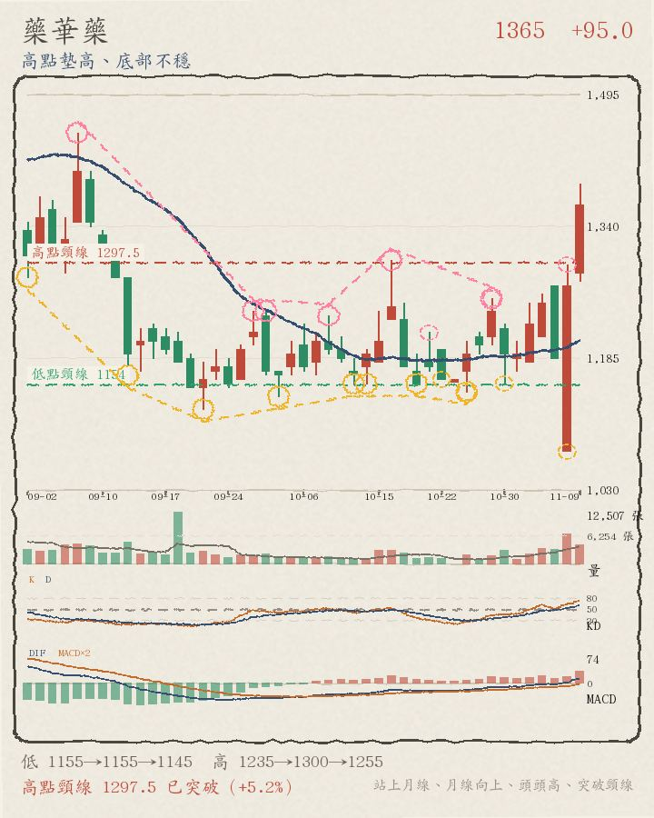
12:31 盤中 1365（+7.48%），比加權指數強 1.66 個百分點、站上月線 1197.5，已突破高點頸線 1297.5，高點還在墊高（但底部沒同步墊高）。
- 月線位置：現價 1365 在月線 1197.5 之上（+14.0%）；5 日線 1224 也在月線之上（短均在上）；月線向上
- 量能：以已過交易時間推估，今天成交量約是 20 日均量的 2.89 倍（爆量），比 20 日均量大不少；上漲又量增，量價配合
- 關鍵價位：高點頸線 1297.5 已站上；前一交易日高點 1295（高於 5.4%）；今天盤中高點 1390（低於 1.8%）；今天盤中低點 1275（高於 7.1%）
- 轉折結構：高點 1235、1300、1255 墊高（頭頭高），但低點 1155、1155、1145 沒有同步墊高；還沒確認的轉折低點 10-30 1155、11-06 1075；還沒確認的轉折高點 10-29 1255、11-06 1295（圖上虛線小圈）
緯穎 6669 上市
1660 +105.0（+6.75%）
區間或轉弱 盤中成交值 55.39 億・全榜第 27 名（上市第 22 名）・相對大盤 +0.93
好條件 0/7：無
不好條件 3/7：跌破前低、在月線之下、月線下彎
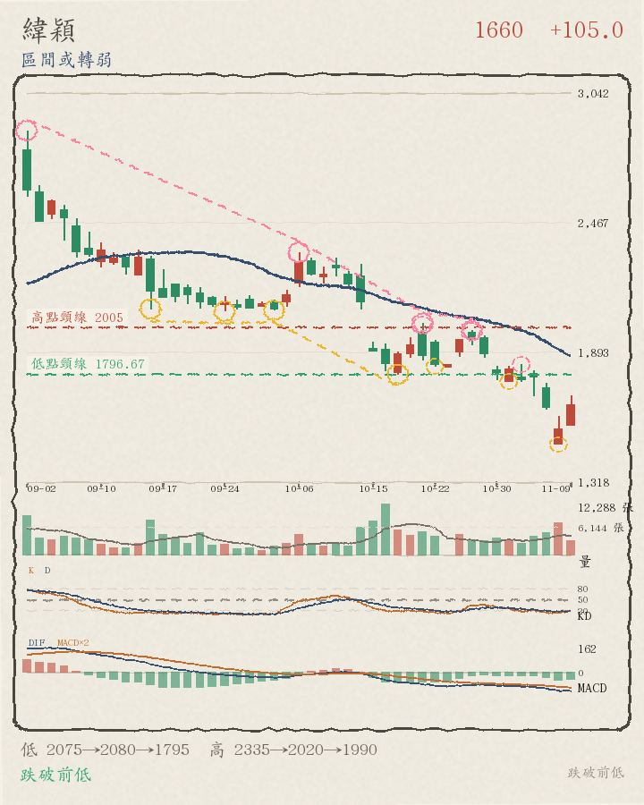
12:31 盤中 1660（+6.75%），比加權指數強 0.93 個百分點、跌破月線 1906，離高點頸線 2005 還差 17.2%，轉折還沒走出明顯方向。
- 月線位置：現價 1660 在月線 1906 之下（-12.9%）；5 日線 1716 也在月線之下（短均在下）；月線向下
- 量能：以已過交易時間推估，今天成交量約是 20 日均量的 0.92 倍（量平），比 20 日均量少一些
- 關鍵價位：已跌破前一個轉折低點；高點頸線 2005 還在現價上方 17.2%；前一交易日高點 1610（高於 3.1%）；今天盤中高點 1700（低於 2.4%）；今天盤中低點 1570（高於 5.7%）
- 轉折結構：低點 2075、2080、1795 與高點 2335、2020、1990 都沒有明顯遞增，屬於區間震盪或轉弱；還沒確認的轉折低點 11-02 1765、11-06 1485；還沒確認的轉折高點 10-28 1990、11-03 1840（圖上虛線小圈）
緯創 3231 上市
172 +12.0（+7.50%）
高點墊高、底部不穩 盤中成交值 55.32 億・全榜第 28 名（上市第 23 名）・相對大盤 +1.68
好條件 2/7：頭頭高、攻擊量（量增＋上漲）
不好條件 3/7：跌破前低、在月線之下、月線下彎
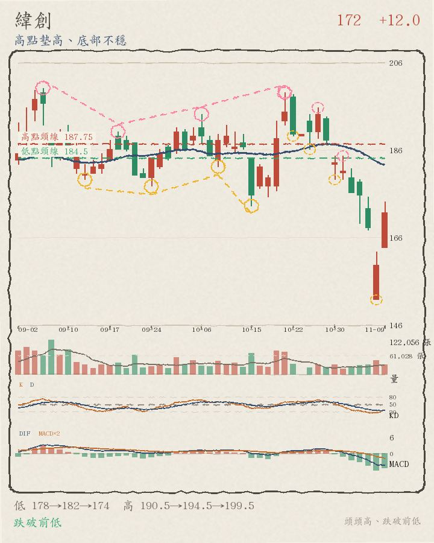
12:31 盤中 172（+7.50%），比加權指數強 1.68 個百分點、跌破月線 183.7，離高點頸線 187.75 還差 8.4%，高點還在墊高（但底部沒同步墊高）。
- 月線位置：現價 172 在月線 183.7 之下（-6.4%）；5 日線 172.5 也在月線之下（短均在下）；月線向下
- 量能：以已過交易時間推估，今天成交量約是 20 日均量的 1.10 倍（量增），比 20 日均量大一些；上漲又量增，量價配合
- 關鍵價位：已跌破前一個轉折低點；高點頸線 187.75 還在現價上方 8.4%；前一交易日高點 163（高於 5.5%）；今天盤中高點 174.5（低於 1.4%）；今天盤中低點 164（高於 4.9%）
- 轉折結構：高點 190.5、194.5、199.5 墊高（頭頭高），但低點 178、182.5、173.5 沒有同步墊高；還沒確認的轉折低點 10-30 179.5、11-06 152；還沒確認的轉折高點 10-28 196、11-02 185（圖上虛線小圈）
大立光 3008 上市
4925 +445.0（+9.93%）
區間或轉弱 盤中成交值 53.63 億・全榜第 29 名（上市第 24 名）・相對大盤 +4.11
好條件 0/7：無
不好條件 3/7：跌破前低、在月線之下、月線下彎
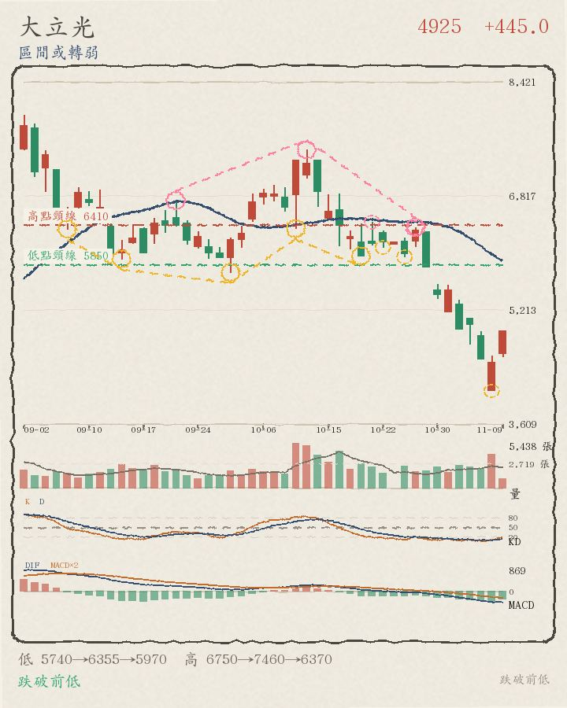
12:31 盤中 4925（+9.93%），比加權指數強 4.11 個百分點、跌破月線 5995.75，離高點頸線 6410 還差 23.2%，轉折還沒走出明顯方向。
- 月線位置：現價 4925 在月線 5995.75 之下（-17.9%）；5 日線 4890 也在月線之下（短均在下）；月線向下
- 量能：以已過交易時間推估，今天成交量約是 20 日均量的 0.49 倍（量縮），比 20 日均量少很多；上漲但量縮，量價背離
- 關鍵價位：已跌破前一個轉折低點；高點頸線 6410 還在現價上方 23.2%；前一交易日高點 4570（高於 7.8%）；今天盤中高點 4925（高於 0.0%）；今天盤中低點 4550（高於 8.2%）
- 轉折結構：低點 5740、6355、5970 與高點 6750、7460、6370 都沒有明顯遞增，屬於區間震盪或轉弱；還沒確認的轉折低點 10-27 5960、11-06 4075；還沒確認的轉折高點 10-21 6450、10-28 6370（圖上虛線小圈）
友達 2409 上市
28.45 +1.9（+7.16%）
底部墊高、未過前高 盤中成交值 50.89 億・全榜第 30 名（上市第 25 名）・相對大盤 +1.34
好條件 1/7：底底高
不好條件 3/7：跌破前低、在月線之下、月線下彎
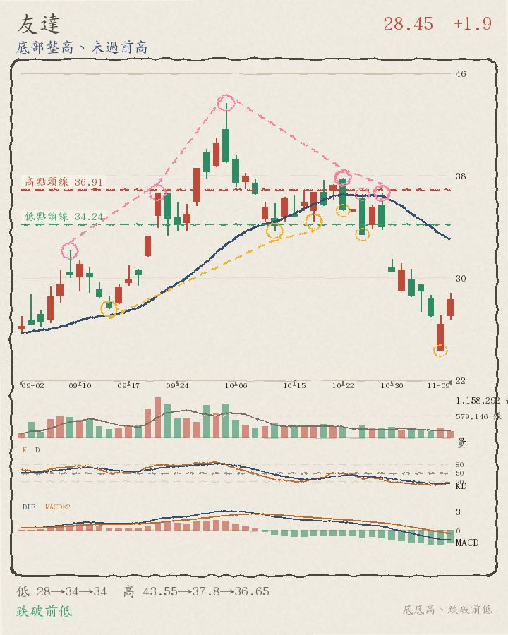
12:31 盤中 28.45（+7.16%），比加權指數強 1.34 個百分點、跌破月線 33.5，離高點頸線 36.91 還差 22.9%，底部還在墊高（但高點沒同步創高）。
- 月線位置：現價 28.45 在月線 33.5 之下（-15.1%）；5 日線 28.49 也在月線之下（短均在下）；月線向下
- 量能：以已過交易時間推估，今天成交量約是 20 日均量的 0.78 倍（量平），比 20 日均量少很多；上漲但量縮，量價背離
- 關鍵價位：已跌破前一個轉折低點；高點頸線 36.91 還在現價上方 22.9%；前一交易日高點 27.2（高於 4.6%）；今天盤中高點 28.95（低於 1.7%）；今天盤中低點 26.95（高於 5.6%）
- 轉折結構：低點 27.75、33.75、34.45 墊高（底底高），但高點 43.55、37.8、36.65 沒有同步創高；還沒確認的轉折低點 10-27 33.45、11-06 24.55；還沒確認的轉折高點 10-27 36.55、10-29 36.65（圖上虛線小圈）
禾伸堂 3026 上市
496.5 +21.0（+4.42%）
區間或轉弱 盤中成交值 49.82 億・全榜第 31 名（上市第 26 名）・相對大盤 -1.40
好條件 1/7：攻擊量（量增＋上漲）
不好條件 4/7：跌破前低、相對大盤弱、在月線之下、月線下彎
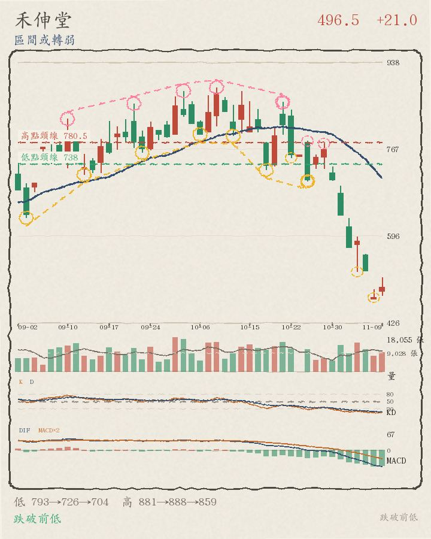
12:31 盤中 496.5（+4.42%），比加權指數弱 1.40 個百分點、跌破月線 729.075，離高點頸線 780.5 還差 36.4%，轉折還沒走出明顯方向。
- 月線位置：現價 496.5 在月線 729.075 之下（-31.9%）；5 日線 560.1 也在月線之下（短均在下）；月線向下
- 量能：以已過交易時間推估，今天成交量約是 20 日均量的 1.12 倍（量增），比 20 日均量大一些；上漲又量增，量價配合
- 關鍵價位：已跌破前一個轉折低點；高點頸線 780.5 還在現價上方 36.4%；前一交易日高點 491（高於 1.1%）；今天盤中高點 515（低於 3.6%）；今天盤中低點 480（高於 3.4%）
- 轉折結構：低點 793、726、704 與高點 881、888、859 都沒有明顯遞增，屬於區間震盪或轉弱；還沒確認的轉折低點 11-04 526、11-06 475.5；還沒確認的轉折高點 10-27 783、10-29 778（圖上虛線小圈）
川湖 2059 上市
7980 +415.0（+5.49%）
區間或轉弱 盤中成交值 46.52 億・全榜第 32 名（上市第 27 名）・相對大盤 -0.33
好條件 1/7：攻擊量（量增＋上漲）
不好條件 4/7：跌破前低、相對大盤弱、在月線之下、月線下彎
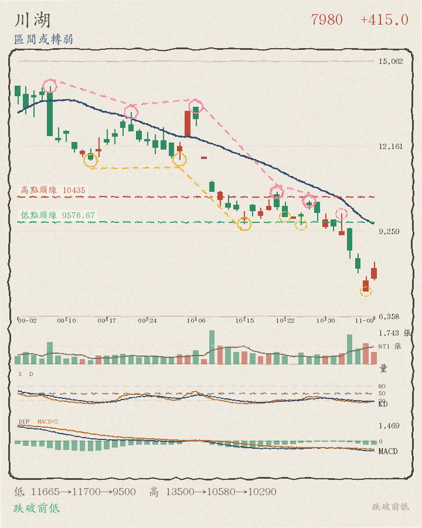
12:31 盤中 7980（+5.49%），比加權指數弱 0.33 個百分點、跌破月線 9642.75，離高點頸線 10435 還差 23.5%，轉折還沒走出明顯方向。
- 月線位置：現價 7980 在月線 9642.75 之下（-17.2%）；5 日線 8564 也在月線之下（短均在下）；月線向下
- 量能：以已過交易時間推估，今天成交量約是 20 日均量的 1.15 倍（量增），比 20 日均量大不少；上漲又量增，量價配合
- 關鍵價位：已跌破前一個轉折低點；高點頸線 10435 還在現價上方 23.5%；前一交易日高點 7700（高於 3.6%）；今天盤中高點 8200（低於 2.7%）；今天盤中低點 7590（高於 5.1%）
- 轉折結構：低點 11665、11700、9500 與高點 13500、10580、10290 都沒有明顯遞增，屬於區間震盪或轉弱；還沒確認的轉折低點 10-27 9475、11-06 7200；還沒確認的轉折高點 10-28 10290、11-03 9850（圖上虛線小圈）
華邦電 2344 上市
132.5 +12.0（+9.96%）
區間或轉弱 盤中成交值 46.45 億・全榜第 33 名（上市第 28 名）・相對大盤 +4.14
好條件 0/7：無
不好條件 3/7：跌破前低、在月線之下、月線下彎
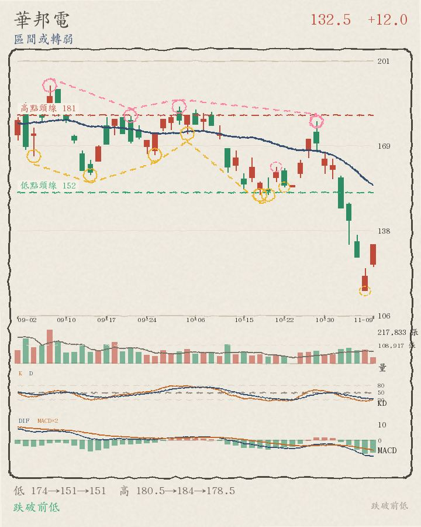
12:31 盤中 132.5（+9.96%），比加權指數強 4.14 個百分點、跌破月線 156.9，離高點頸線 181 還差 26.8%，轉折還沒走出明顯方向。
- 月線位置：現價 132.5 在月線 156.9 之下（-15.6%）；5 日線 139.5 也在月線之下（短均在下）；月線向下
- 量能：以已過交易時間推估，今天成交量約是 20 日均量的 0.68 倍（量縮），比 20 日均量少很多；上漲但量縮，量價背離
- 關鍵價位：已跌破前一個轉折低點；高點頸線 181 還在現價上方 26.8%；前一交易日高點 123.5（高於 7.3%）；今天盤中高點 132.5（高於 0.0%）；今天盤中低點 124（高於 6.9%）
- 轉折結構：低點 174、151、151 與高點 180.5、184、178.5 都沒有明顯遞增，屬於區間震盪或轉弱；還沒確認的轉折低點 10-22 154、11-06 115；還沒確認的轉折高點 10-21 161.5、10-29 178.5（圖上虛線小圈）
致茂 2360 上市
1205 +0.0（+0.00%）
區間或轉弱 盤中成交值 45.67 億・全榜第 34 名（上市第 29 名）・相對大盤 -5.82
好條件 0/7：無
不好條件 4/7：跌破前低、相對大盤弱、在月線之下、月線下彎
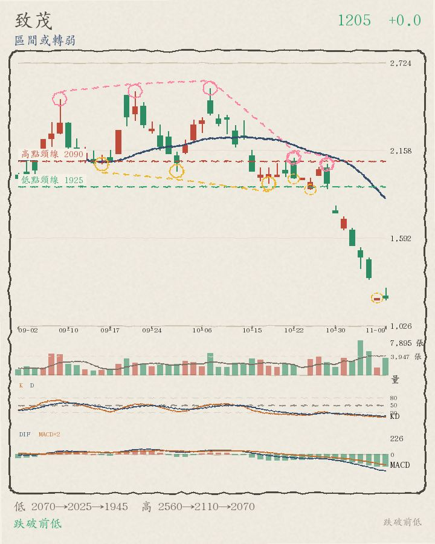
12:31 盤中 1205（+0.00%），比加權指數弱 5.82 個百分點、跌破月線 1905.25，離高點頸線 2090 還差 42.3%，轉折還沒走出明顯方向。
- 月線位置：現價 1205 在月線 1905.25 之下（-36.8%）；5 日線 1454 也在月線之下（短均在下）；月線向下
- 量能：以已過交易時間推估，今天成交量約是 20 日均量的 1.50 倍（爆量），比 20 日均量大不少
- 關鍵價位：已跌破前一個轉折低點；高點頸線 2090 還在現價上方 42.3%；前一交易日高點 1205（高於 0.0%）；今天盤中高點 1270（低於 5.1%）；今天盤中低點 1190（高於 1.3%）
- 轉折結構：低點 2070、2025、1945 與高點 2560、2110、2070 都沒有明顯遞增，屬於區間震盪或轉弱；還沒確認的轉折低點 10-27 1905、11-06 1205；還沒確認的轉折高點 10-22 2110、10-29 2070（圖上虛線小圈）
騰輝電子-KY 6672 上市
487.5 +24.5（+5.29%）
上升趨勢（底底高＋頭頭高） 盤中成交值 45.18 億・全榜第 35 名（上市第 30 名）・相對大盤 -0.53
好條件 4/7：月線向上、底底高、頭頭高、攻擊量（量增＋上漲）
不好條件 3/7：跌破前低、相對大盤弱、在月線之下
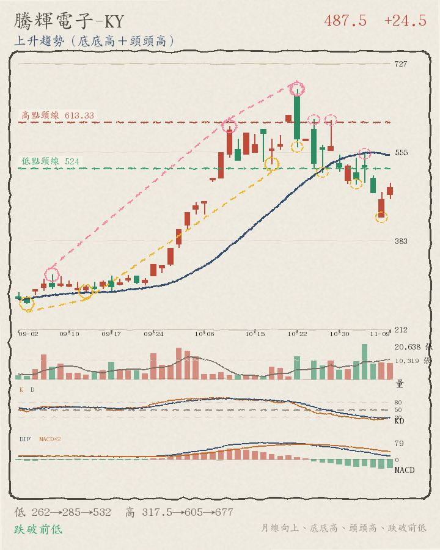
12:31 盤中 487.5（+5.29%），比加權指數弱 0.53 個百分點、跌破月線 552.625，離高點頸線 613.33 還差 20.5%，轉折結構仍是底底高＋頭頭高。
- 月線位置：現價 487.5 在月線 552.625 之下（-11.8%）；5 日線 499.9 也在月線之下（短均在下）；月線向上
- 量能：以已過交易時間推估，今天成交量約是 20 日均量的 1.85 倍（爆量），比 20 日均量大不少；上漲又量增，量價配合
- 關鍵價位：已跌破前一個轉折低點；高點頸線 613.33 還在現價上方 20.5%；前一交易日高點 477.5（高於 2.1%）；今天盤中高點 495（低於 1.5%）；今天盤中低點 464（高於 5.1%）
- 轉折結構：低點 261.5、285、532 一路墊高、高點 317.5、605、677 也一路墊高，是底底高＋頭頭高；還沒確認的轉折低點 11-03 493.5、11-06 429；還沒確認的轉折高點 10-29 617、11-04 552（圖上虛線小圈）
GIS-KY 6456 上市
76.7 -3.9（-4.84%）
區間或轉弱 盤中成交值 44.79 億・全榜第 36 名（上市第 31 名）・相對大盤 -10.66
好條件 0/7：無
不好條件 6/7：跌破前低、今日下跌、相對大盤弱、在月線之下、跌破昨日低點、月線下彎
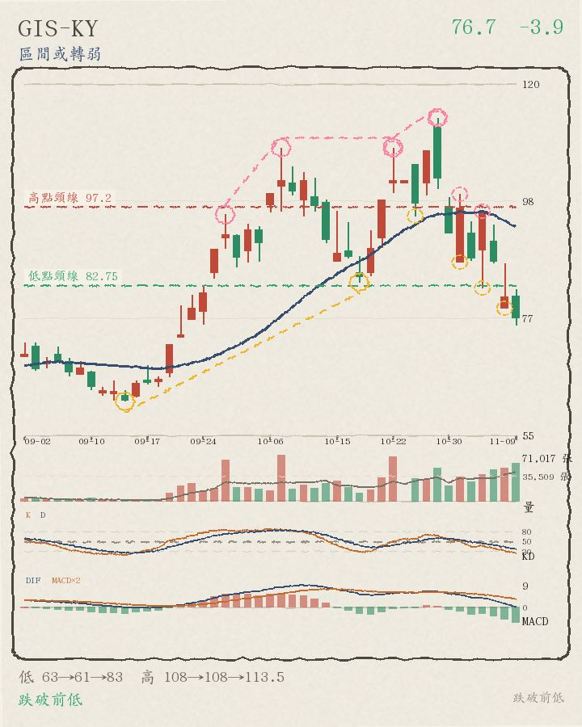
12:31 盤中 76.7（-4.84%），比加權指數弱 10.66 個百分點、跌破月線 94.635，離高點頸線 97.2 還差 21.1%，轉折還沒走出明顯方向。
- 月線位置：現價 76.7 在月線 94.635 之下（-18.9%）；5 日線 89.78 也在月線之下（短均在下）；月線向下
- 量能：以已過交易時間推估，今天成交量約是 20 日均量的 2.22 倍（爆量），比 20 日均量大不少；下跌卻量增，量價背離
- 關鍵價位：已跌破前一個轉折低點；高點頸線 97.2 還在現價上方 21.1%；前一交易日高點 86.7（低於 11.5%）；今天盤中高點 81.9（低於 6.3%）；今天盤中低點 75.4（高於 1.7%）
- 轉折結構：低點 62.9、61.4、83.3 與高點 108、108、113.5 都沒有明顯遞增，屬於區間震盪或轉弱；還沒確認的轉折低點 11-04 82.2、11-06 78.5；還沒確認的轉折高點 11-02 99.5、11-04 96.4（圖上虛線小圈）
廣達 2382 上市
299.5 +9.0（+3.10%）
區間或轉弱 盤中成交值 42.83 億・全榜第 37 名（上市第 32 名）・相對大盤 -2.72
好條件 1/7：攻擊量（量增＋上漲）
不好條件 4/7：跌破前低、相對大盤弱、在月線之下、月線下彎
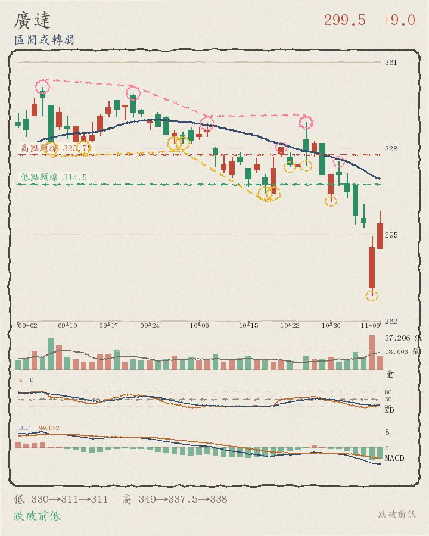
12:31 盤中 299.5（+3.10%），比加權指數弱 2.72 個百分點、跌破月線 317.775，離高點頸線 325.75 還差 8.1%，轉折還沒走出明顯方向。
- 月線位置：現價 299.5 在月線 317.775 之下（-5.8%）；5 日線 304.5 也在月線之下（短均在下）；月線向下
- 量能：以已過交易時間推估，今天成交量約是 20 日均量的 1.59 倍（爆量），比 20 日均量大不少；上漲又量增，量價配合
- 關鍵價位：已跌破前一個轉折低點；高點頸線 325.75 還在現價上方 8.1%；前一交易日高點 294.5（高於 1.7%）；今天盤中高點 304（低於 1.5%）；今天盤中低點 290（高於 3.3%）
- 轉折結構：低點 330、311、311 與高點 349、337.5、338 都沒有明顯遞增，屬於區間震盪或轉弱；還沒確認的轉折低點 10-30 308、11-06 272；還沒確認的轉折高點 10-27 338、11-02 323（圖上虛線小圈）
華通 2313 上市
174 +15.0（+9.43%）
上升趨勢（底底高＋頭頭高） 盤中成交值 42.41 億・全榜第 38 名（上市第 33 名）・相對大盤 +3.61
好條件 3/7：底底高、頭頭高、守住今日高檔（距今日高點 1% 內）
不好條件 3/7：跌破前低、在月線之下、月線下彎
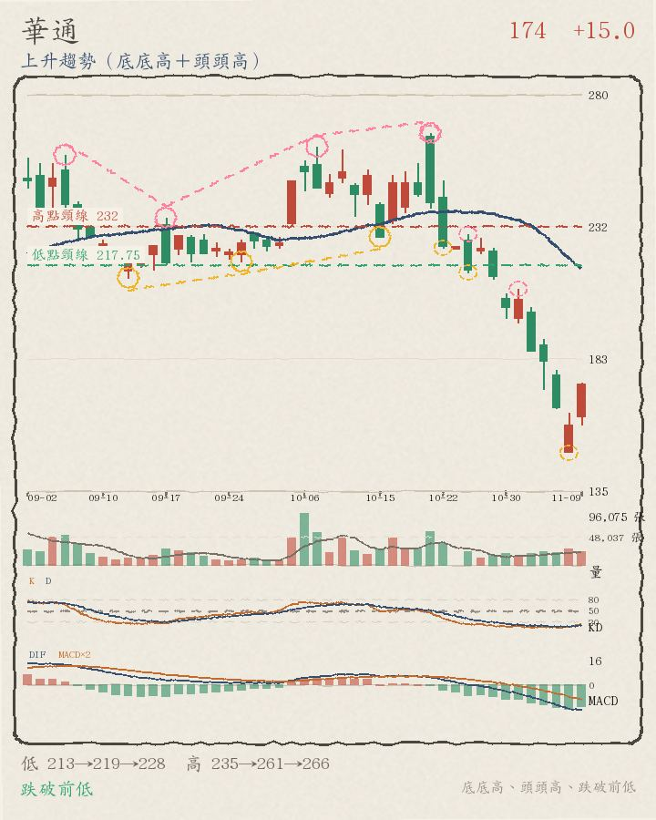
12:31 盤中 174（+9.43%），比加權指數強 3.61 個百分點、跌破月線 220.225，離高點頸線 232 還差 25.0%，轉折結構仍是底底高＋頭頭高。
- 月線位置：現價 174 在月線 220.225 之下（-21.0%）；5 日線 179.6 也在月線之下（短均在下）；月線向下
- 量能：以已過交易時間推估，今天成交量約是 20 日均量的 1.03 倍（量平），跟 20 日均量差不多
- 關鍵價位：已跌破前一個轉折低點；高點頸線 232 還在現價上方 25.0%；前一交易日高點 163.5（高於 6.4%）；今天盤中高點 174.5（低於 0.3%）；今天盤中低點 159（高於 9.4%）
- 轉折結構：低點 213、219、228 一路墊高、高點 235、261、266 也一路墊高，是底底高＋頭頭高；還沒確認的轉折低點 10-27 215、11-06 149；還沒確認的轉折高點 10-27 229、11-02 209（圖上虛線小圈）
高力 8996 上市
1295 +115.0（+9.75%）
區間或轉弱 盤中成交值 42.14 億・全榜第 39 名（上市第 34 名）・相對大盤 +3.93
好條件 0/7：無
不好條件 3/7：跌破前低、在月線之下、月線下彎
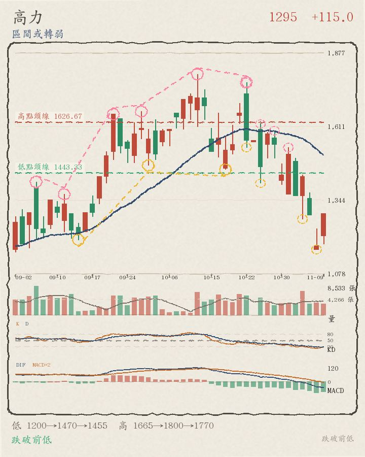
12:31 盤中 1295（+9.75%），比加權指數強 3.93 個百分點、跌破月線 1528.5，離高點頸線 1626.67 還差 20.4%，轉折還沒走出明顯方向。
- 月線位置：現價 1295 在月線 1528.5 之下（-15.3%）；5 日線 1354 也在月線之下（短均在下）；月線向下
- 量能：以已過交易時間推估，今天成交量約是 20 日均量的 1.06 倍（量平），比 20 日均量大一些
- 關鍵價位：已跌破前一個轉折低點；高點頸線 1626.67 還在現價上方 20.4%；前一交易日高點 1240（高於 4.4%）；今天盤中高點 1295（高於 0.0%）；今天盤中低點 1185（高於 9.3%）
- 轉折結構：低點 1200、1470、1455 與高點 1665、1800、1770 都沒有明顯遞增，屬於區間震盪或轉弱；還沒確認的轉折低點 11-04 1275、11-06 1165；還沒確認的轉折高點 10-29 1595、11-02 1535（圖上虛線小圈）
貿聯-KY 3665 上市
1410 +85.0（+6.42%）
區間或轉弱 盤中成交值 41.57 億・全榜第 40 名（上市第 35 名）・相對大盤 +0.60
好條件 1/7：攻擊量（量增＋上漲）
不好條件 3/7：跌破前低、在月線之下、月線下彎
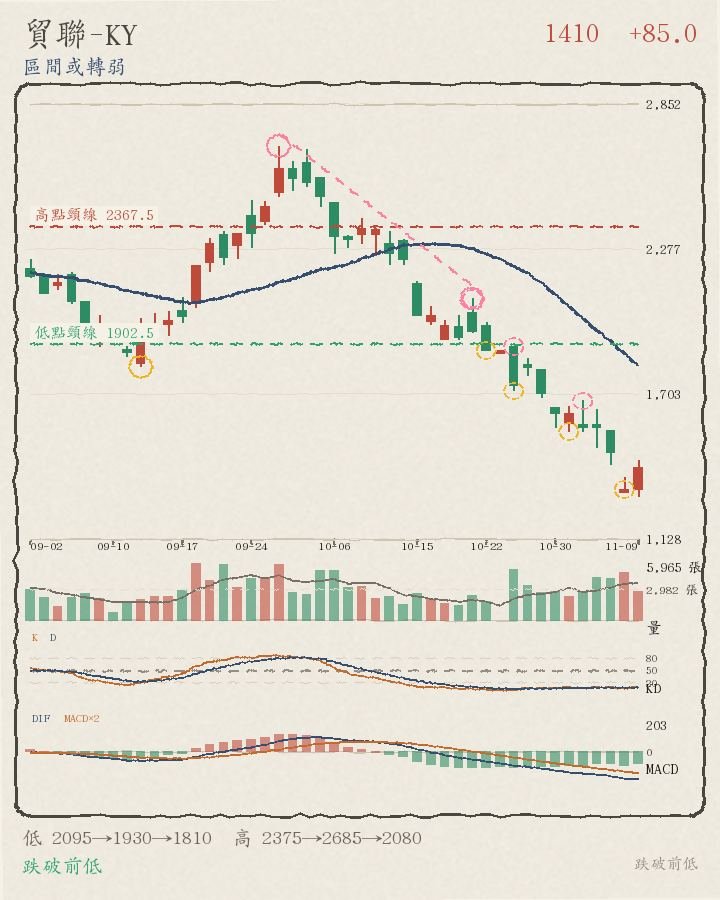
12:31 盤中 1410（+6.42%），比加權指數強 0.60 個百分點、跌破月線 1864，離高點頸線 2367.5 還差 40.4%，轉折還沒走出明顯方向。
- 月線位置：現價 1410 在月線 1864 之下（-24.4%）；5 日線 1513 也在月線之下（短均在下）；月線向下
- 量能：以已過交易時間推估，今天成交量約是 20 日均量的 1.30 倍（量增），比 20 日均量大不少；上漲又量增，量價配合
- 關鍵價位：已跌破前一個轉折低點；高點頸線 2367.5 還在現價上方 40.4%；前一交易日高點 1370（高於 2.9%）；今天盤中高點 1440（低於 2.1%）；今天盤中低點 1295（高於 8.9%）
- 轉折結構：低點 2095、1930、1810 與高點 2375、2685、2080 都沒有明顯遞增，屬於區間震盪或轉弱；還沒確認的轉折低點 11-02 1555、11-06 1325；還沒確認的轉折高點 10-27 1890、11-03 1675（圖上虛線小圈）
台玻 1802 上市
63.5 +5.7（+9.86%）
底部墊高、未過前高 盤中成交值 39.26 億・全榜第 41 名（上市第 36 名）・相對大盤 +4.04
好條件 2/7：月線向上、底底高
不好條件 1/7：在月線之下
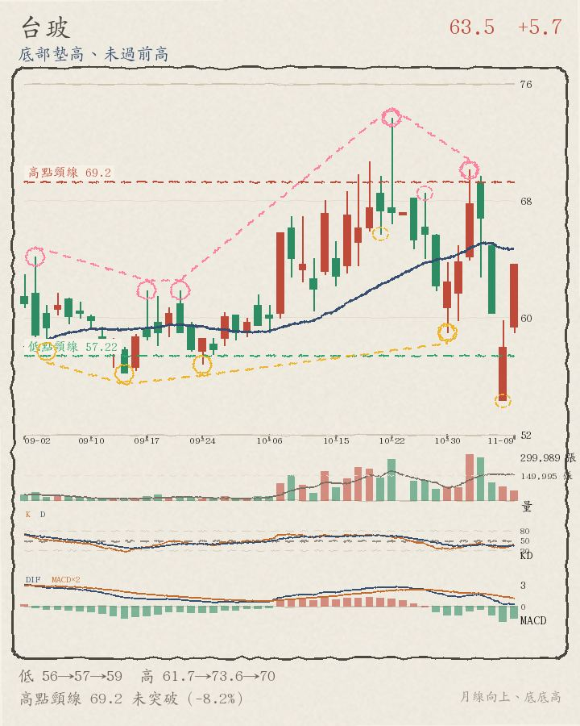
12:31 盤中 63.5（+9.86%），比加權指數強 4.04 個百分點、跌破月線 64.585，離高點頸線 69.2 還差 8.2%，底部還在墊高（但高點沒同步創高）。
- 月線位置：現價 63.5 在月線 64.585 之下（-1.7%）；5 日線 63.2 也在月線之下（短均在下）；月線向上
- 量能：以已過交易時間推估，今天成交量約是 20 日均量的 0.53 倍（量縮），比 20 日均量少很多；上漲但量縮，量價背離
- 關鍵價位：高點頸線 69.2 還沒突破，差 8.2%；前一交易日高點 59.6（高於 6.5%）；今天盤中高點 63.5（高於 0.0%）；今天盤中低點 58.8（高於 8.0%）
- 轉折結構：低點 56、56.6、58.8 墊高（底底高），但高點 61.7、73.6、70 沒有同步創高；還沒確認的轉折低點 10-30 58.8、11-06 54.1；還沒確認的轉折高點 10-28 68.4、11-03 70（圖上虛線小圈）
群創 3481 上市
39.65 +3.6（+9.99%）
區間或轉弱 盤中成交值 38.22 億・全榜第 42 名（上市第 37 名）・相對大盤 +4.17
好條件 0/7：無
不好條件 3/7：跌破前低、在月線之下、月線下彎
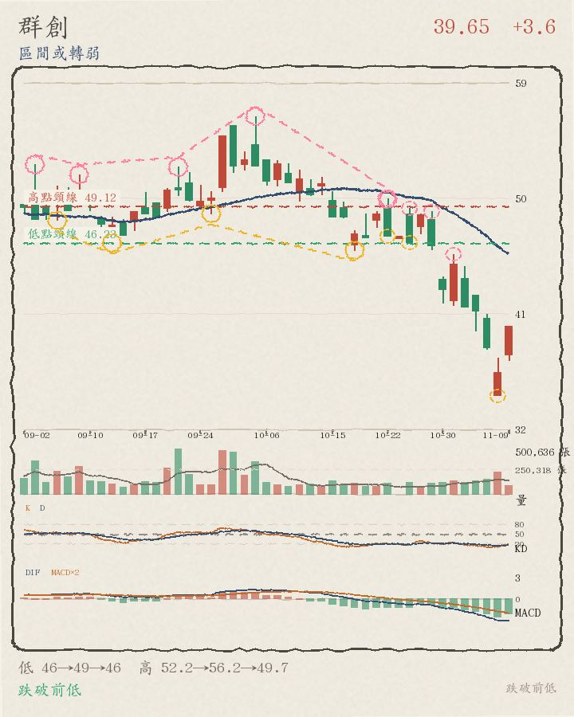
12:31 盤中 39.65（+9.99%），比加權指數強 4.17 個百分點、跌破月線 45.973，離高點頸線 49.12 還差 19.3%，轉折還沒走出明顯方向。
- 月線位置：現價 39.65 在月線 45.973 之下（-13.8%）；5 日線 40.14 也在月線之下（短均在下）；月線向下
- 量能：以已過交易時間推估，今天成交量約是 20 日均量的 1.08 倍（量平），比 20 日均量大一些
- 關鍵價位：已跌破前一個轉折低點；高點頸線 49.12 還在現價上方 19.3%；前一交易日高點 37.15（高於 6.7%）；今天盤中高點 39.65（高於 0.0%）；今天盤中低點 37（高於 7.2%）
- 轉折結構：低點 46.25、48.55、45.65 與高點 52.2、56.2、49.7 都沒有明顯遞增，屬於區間震盪或轉弱；還沒確認的轉折低點 10-27 46.25、11-06 34.2；還沒確認的轉折高點 10-29 48.7、11-02 45.35（圖上虛線小圈）
環球晶 6488 上櫃
563 +51.0（+9.96%）
區間或轉弱 盤中成交值 34.33 億・全榜第 43 名（上櫃第 6 名）・相對大盤 +4.14
好條件 0/7：無
不好條件 3/7：跌破前低、在月線之下、月線下彎
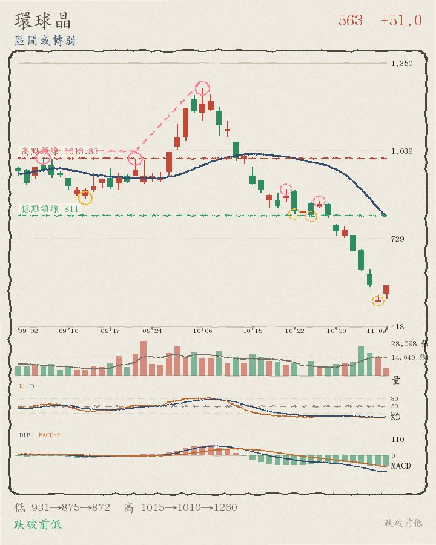
12:31 盤中 563（+9.96%），比加權指數強 4.14 個百分點、跌破月線 836.8，離高點頸線 1013.33 還差 44.4%，轉折還沒走出明顯方向。
- 月線位置：現價 563 在月線 836.8 之下（-32.7%）；5 日線 628 也在月線之下（短均在下）；月線向下
- 量能：以已過交易時間推估，今天成交量約是 20 日均量的 0.63 倍（量縮），比 20 日均量少很多；上漲但量縮，量價背離
- 關鍵價位：已跌破前一個轉折低點；高點頸線 1013.33 還在現價上方 44.4%；前一交易日高點 529（高於 6.4%）；今天盤中高點 563（高於 0.0%）；今天盤中低點 518（高於 8.7%）
- 轉折結構：低點 931、875、872 與高點 1015、1010、1260 都沒有明顯遞增，屬於區間震盪或轉弱；還沒確認的轉折低點 10-27 807、11-06 508；還沒確認的轉折高點 10-21 903、10-28 860（圖上虛線小圈）
華新科 2492 上市
284 +25.5（+9.86%）
區間或轉弱 盤中成交值 33.62 億・全榜第 44 名（上市第 38 名）・相對大盤 +4.04
好條件 0/7：無
不好條件 3/7：跌破前低、在月線之下、月線下彎
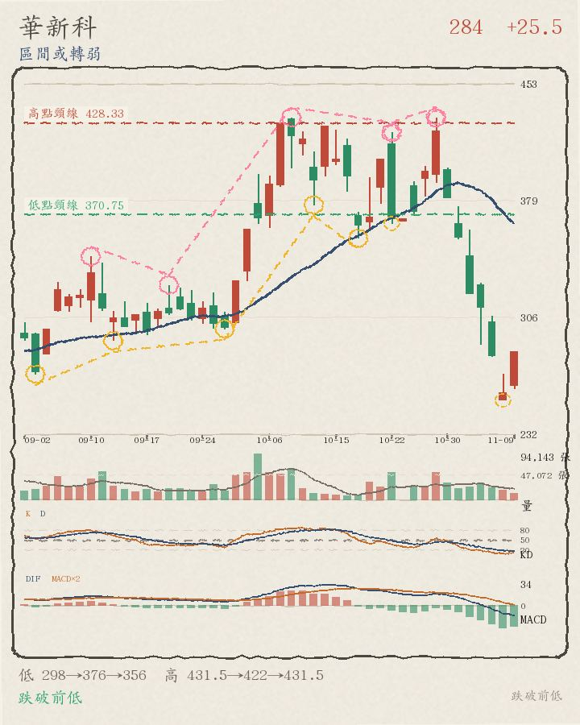
12:31 盤中 284（+9.86%），比加權指數強 4.04 個百分點、跌破月線 371.7，離高點頸線 428.33 還差 33.7%，轉折還沒走出明顯方向。
- 月線位置：現價 284 在月線 371.7 之下（-23.6%）；5 日線 305.7 也在月線之下（短均在下）；月線向下
- 量能：以已過交易時間推估，今天成交量約是 20 日均量的 0.52 倍（量縮），比 20 日均量少很多；上漲但量縮，量價背離
- 關鍵價位：已跌破前一個轉折低點；高點頸線 428.33 還在現價上方 33.7%；前一交易日高點 270（高於 5.2%）；今天盤中高點 284（高於 0.0%）；今天盤中低點 261（高於 8.8%）
- 轉折結構：低點 298.5、376.5、355.5 與高點 431.5、422、431.5 都沒有明顯遞增，屬於區間震盪或轉弱；還沒確認的轉折低點 10-22 365、11-06 253.5；還沒確認的轉折高點 10-22 422、10-29 431.5（圖上虛線小圈）
富世達 6805 上市
1855 +165.0（+9.76%）
區間或轉弱 盤中成交值 31.41 億・全榜第 45 名（上市第 39 名）・相對大盤 +3.94
好條件 1/7：攻擊量（量增＋上漲）
不好條件 3/7：跌破前低、在月線之下、月線下彎
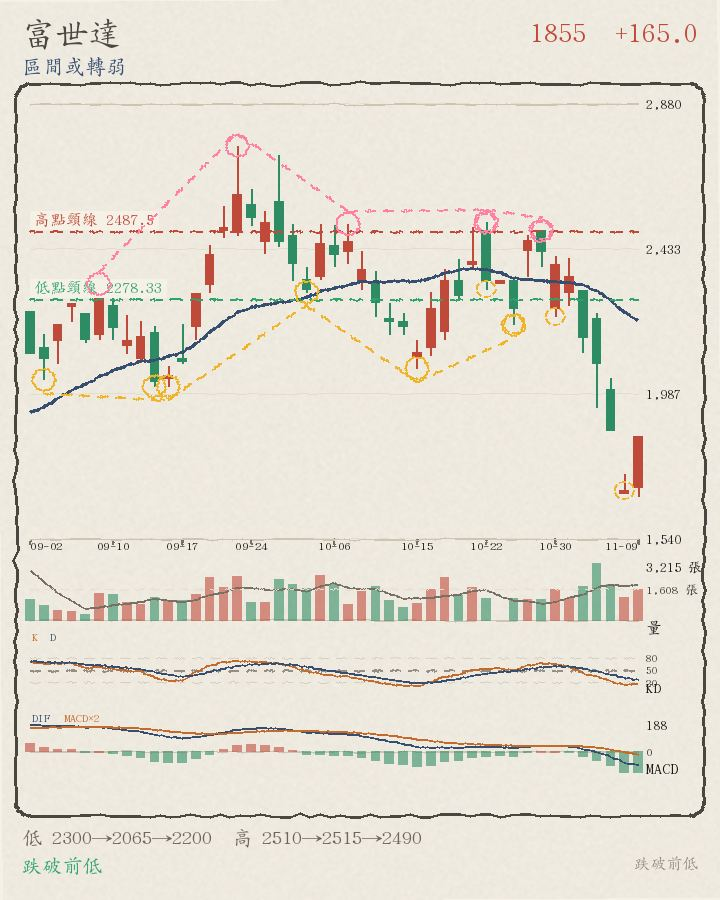
12:31 盤中 1855（+9.76%），比加權指數強 3.94 個百分點、跌破月線 2238.75，離高點頸線 2487.5 還差 25.4%，轉折還沒走出明顯方向。
- 月線位置：現價 1855 在月線 2238.75 之下（-17.1%）；5 日線 2031 也在月線之下（短均在下）；月線向下
- 量能：以已過交易時間推估，今天成交量約是 20 日均量的 1.41 倍（量增），比 20 日均量大不少；上漲又量增，量價配合
- 關鍵價位：已跌破前一個轉折低點；高點頸線 2487.5 還在現價上方 25.4%；前一交易日高點 1740（高於 6.6%）；今天盤中高點 1855（高於 0.0%）；今天盤中低點 1670（高於 11.1%）
- 轉折結構：低點 2300、2065、2200 與高點 2510、2515、2490 都沒有明顯遞增，屬於區間震盪或轉弱；還沒確認的轉折低點 10-30 2225、11-06 1690；還沒確認的轉折高點 10-22 2515、10-29 2490（圖上虛線小圈）
愛普* 6531 上市
662 +54.0（+8.88%）
區間或轉弱 盤中成交值 31.03 億・全榜第 46 名（上市第 40 名）・相對大盤 +3.06
好條件 2/7：攻擊量（量增＋上漲）、守住今日高檔（距今日高點 1% 內）
不好條件 3/7：跌破前低、在月線之下、月線下彎
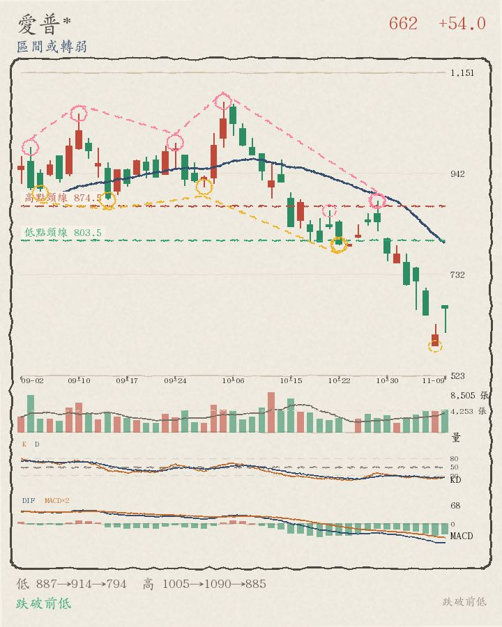
12:31 盤中 662（+8.88%），比加權指數強 3.06 個百分點、跌破月線 813.35，離高點頸線 874.5 還差 24.3%，轉折還沒走出明顯方向。
- 月線位置：現價 662 在月線 813.35 之下（-18.6%）；5 日線 692.4 也在月線之下（短均在下）；月線向下
- 量能：以已過交易時間推估，今天成交量約是 20 日均量的 1.55 倍（爆量），比 20 日均量大不少；上漲又量增，量價配合
- 關鍵價位：已跌破前一個轉折低點；高點頸線 874.5 還在現價上方 24.3%；前一交易日高點 630（高於 5.1%）；今天盤中高點 668（低於 0.9%）；今天盤中低點 612（高於 8.2%）
- 轉折結構：低點 887、914、794 與高點 1005、1090、885 都沒有明顯遞增，屬於區間震盪或轉弱；還沒確認的轉折低點 10-22 794、11-06 584；還沒確認的轉折高點 10-21 864、10-29 885（圖上虛線小圈）
大量 3167 上市
740 +40.0（+5.71%）
區間或轉弱 盤中成交值 30.98 億・全榜第 47 名（上市第 41 名）・相對大盤 -0.11
好條件 1/7：攻擊量（量增＋上漲）
不好條件 4/7：跌破前低、相對大盤弱、在月線之下、月線下彎
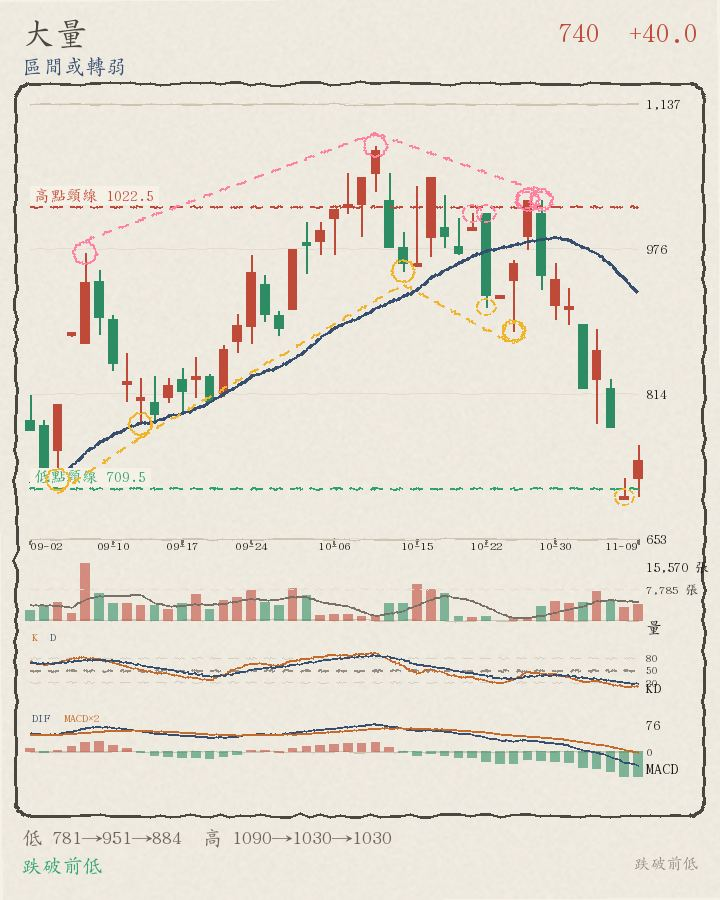
12:31 盤中 740（+5.71%），比加權指數弱 0.11 個百分點、跌破月線 942.55，離高點頸線 1022.5 還差 27.6%，轉折還沒走出明顯方向。
- 月線位置：現價 740 在月線 942.55 之下（-21.5%）；5 日線 814.6 也在月線之下（短均在下）；月線向下
- 量能：以已過交易時間推估，今天成交量約是 20 日均量的 1.40 倍（量增），比 20 日均量大不少；上漲又量增，量價配合
- 關鍵價位：已跌破前一個轉折低點；高點頸線 1022.5 還在現價上方 27.6%；前一交易日高點 720（高於 2.8%）；今天盤中高點 757（低於 2.2%）；今天盤中低點 700（高於 5.7%）
- 轉折結構：低點 781、951、884 與高點 1090、1030、1030 都沒有明顯遞增，屬於區間震盪或轉弱；還沒確認的轉折低點 10-27 884、11-06 700；還沒確認的轉折高點 10-28 1030、10-29 1030（圖上虛線小圈）
旺矽 6223 上櫃
3765 +320.0（+9.29%）
區間或轉弱 盤中成交值 29.86 億・全榜第 48 名（上櫃第 7 名）・相對大盤 +3.47
好條件 1/7：守住今日高檔（距今日高點 1% 內）
不好條件 3/7：跌破前低、在月線之下、月線下彎
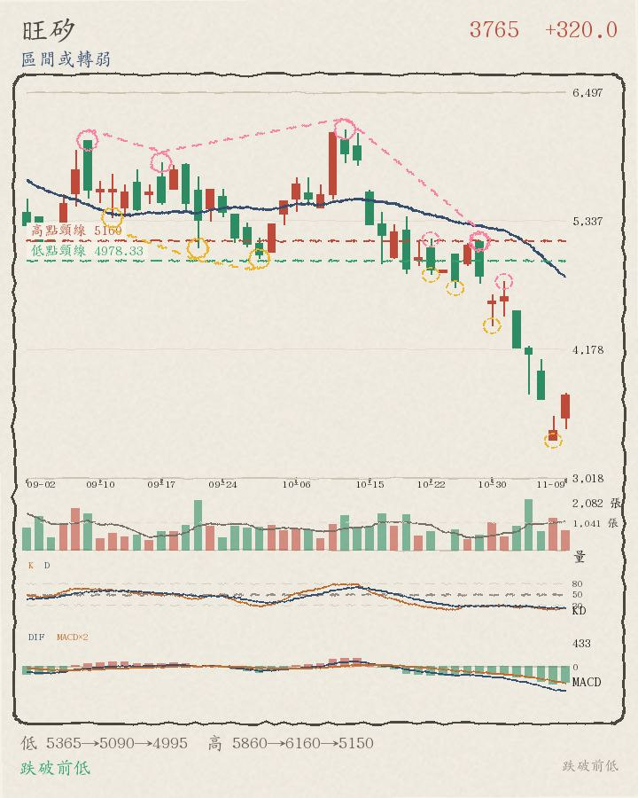
12:31 盤中 3765（+9.29%），比加權指數強 3.47 個百分點、跌破月線 4923，離高點頸線 5160 還差 27.0%，轉折還沒走出明顯方向。
- 月線位置：現價 3765 在月線 4923 之下（-23.5%）；5 日線 4030 也在月線之下（短均在下）；月線向下
- 量能：以已過交易時間推估，今天成交量約是 20 日均量的 1.06 倍（量平），比 20 日均量大一些
- 關鍵價位：已跌破前一個轉折低點；高點頸線 5160 還在現價上方 27.0%；前一交易日高點 3575（高於 5.3%）；今天盤中高點 3785（低於 0.5%）；今天盤中低點 3465（高於 8.7%）
- 轉折結構：低點 5365、5090、4995 與高點 5860、6160、5150 都沒有明顯遞增，屬於區間震盪或轉弱；還沒確認的轉折低點 10-30 4390、11-06 3355；還沒確認的轉折高點 10-29 5150、11-02 4790（圖上虛線小圈）
中信金 2891 上市
76.2 +2.8（+3.81%）
區間或轉弱 盤中成交值 27.96 億・全榜第 49 名（上市第 42 名）・相對大盤 -2.01
好條件 4/7：站上月線、月線向上、突破頸線、攻擊量（量增＋上漲）
不好條件 1/7：相對大盤弱
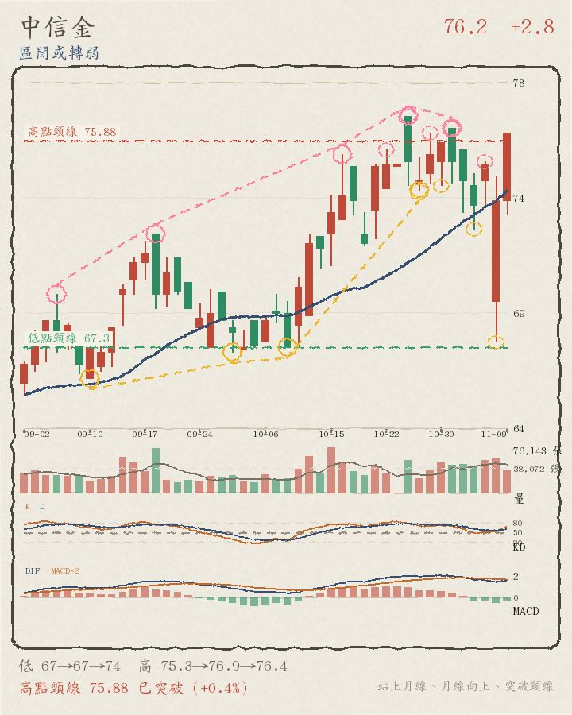
12:31 盤中 76.2（+3.81%），比加權指數弱 2.01 個百分點、站上月線 73.36，已突破高點頸線 75.88，轉折還沒走出明顯方向。
- 月線位置：現價 76.2 在月線 73.36 之上（+3.9%）；5 日線 74.14 也在月線之上（短均在上）；月線向上
- 量能：以已過交易時間推估，今天成交量約是 20 日均量的 1.12 倍（量增），比 20 日均量大一些；上漲又量增，量價配合
- 關鍵價位：高點頸線 75.88 已站上；前一交易日高點 74.4（高於 2.4%）；今天盤中高點 76.2（高於 0.0%）；今天盤中低點 72.8（高於 4.7%）
- 轉折結構：低點 67.1、67.3、73.8 與高點 75.3、76.9、76.4 都沒有明顯遞增，屬於區間震盪或轉弱；還沒確認的轉折低點 11-04 72.2、11-06 67.5；還沒確認的轉折高點 11-02 76.4、11-05 75（圖上虛線小圈）
力積電 6770 上市
58.1 +5.2（+9.83%）
區間或轉弱 盤中成交值 27.93 億・全榜第 50 名（上市第 43 名）・相對大盤 +4.01
好條件 0/7：無
不好條件 3/7：跌破前低、在月線之下、月線下彎
12:31 盤中 58.1（+9.83%），比加權指數強 4.01 個百分點、跌破月線 65.67，離高點頸線 74.17 還差 21.7%，轉折還沒走出明顯方向。
- 月線位置：現價 58.1 在月線 65.67 之下（-11.5%）；5 日線 58.52 也在月線之下（短均在下）；月線向下
- 量能：以已過交易時間推估，今天成交量約是 20 日均量的 0.57 倍（量縮），比 20 日均量少很多；上漲但量縮，量價背離
- 關鍵價位：已跌破前一個轉折低點；高點頸線 74.17 還在現價上方 21.7%；前一交易日高點 54.3（高於 7.0%）；今天盤中高點 58.1（高於 0.0%）；今天盤中低點 54.2（高於 7.2%）
- 轉折結構：低點 66.7、70.5、63 與高點 74.7、78.1、73 都沒有明顯遞增，屬於區間震盪或轉弱；還沒確認的轉折低點 10-23 66.4、11-06 49.35；還沒確認的轉折高點 10-22 69.9、10-29 73（圖上虛線小圈）
智邦 2345 上市
1405 +125.0（+9.77%）
區間或轉弱 盤中成交值 27.36 億・全榜第 51 名（上市第 44 名）・相對大盤 +3.95
好條件 0/7：無
不好條件 3/7：跌破前低、在月線之下、月線下彎
12:31 盤中 1405（+9.77%），比加權指數強 3.95 個百分點、跌破月線 1787.75，轉折還沒走出明顯方向。
- 月線位置：現價 1405 在月線 1787.75 之下（-21.4%）；5 日線 1450 也在月線之下（短均在下）；月線向下
- 量能：以已過交易時間推估，今天成交量約是 20 日均量的 0.59 倍（量縮），比 20 日均量少很多；上漲但量縮，量價背離
- 關鍵價位：前一交易日高點 1300（高於 8.1%）；今天盤中高點 1405（高於 0.0%）；今天盤中低點 1330（高於 5.6%）
- 轉折結構：低點 1770、1970、1910 與高點 2145、2055、1875 都沒有明顯遞增，屬於區間震盪或轉弱；還沒確認的轉折低點 10-27 1740、11-06 1245；還沒確認的轉折高點 10-29 1875（圖上虛線小圈）
中華電 2412 上市
159 -4.5（-2.75%）
上升趨勢（底底高＋頭頭高） 盤中成交值 27.26 億・全榜第 52 名（上市第 45 名）・相對大盤 -8.57
好條件 4/7：站上月線、月線向上、底底高、頭頭高
不好條件 2/7：今日下跌、相對大盤弱
12:31 盤中 159（-2.75%），比加權指數弱 8.57 個百分點、站上月線 155.575，離高點頸線 159.67 還差 0.4%，轉折結構仍是底底高＋頭頭高。
- 月線位置：現價 159 在月線 155.575 之上（+2.2%）；5 日線 161 也在月線之上（短均在上）；月線向上
- 量能：以已過交易時間推估，今天成交量約是 20 日均量的 1.74 倍（爆量），比 20 日均量大不少；下跌卻量增，量價背離
- 關鍵價位：高點頸線 159.67 還沒突破，差 0.4%；前一交易日高點 164（低於 3.0%）；今天盤中高點 163（低於 2.5%）；今天盤中低點 159（高於 0.0%）
- 轉折結構：低點 143、144、155.5 一路墊高、高點 145.5、146、147 也一路墊高，是底底高＋頭頭高；還沒確認的轉折低點 11-03 157.5、11-06 156.5；還沒確認的轉折高點 11-02 161.5、11-05 166.5（圖上虛線小圈）
聯茂 6213 上市
520 +24.0（+4.84%）
高點墊高、底部不穩 盤中成交值 27.02 億・全榜第 53 名（上市第 46 名）・相對大盤 -0.98
好條件 1/7：頭頭高
不好條件 4/7：跌破前低、相對大盤弱、在月線之下、月線下彎
12:31 盤中 520（+4.84%），比加權指數弱 0.98 個百分點、跌破月線 730.3，離高點頸線 865.67 還差 39.9%，高點還在墊高（但底部沒同步墊高）。
- 月線位置：現價 520 在月線 730.3 之下（-28.8%）；5 日線 583 也在月線之下（短均在下）；月線向下
- 量能：以已過交易時間推估，今天成交量約是 20 日均量的 0.42 倍（量縮），比 20 日均量少很多；上漲但量縮，量價背離
- 關鍵價位：已跌破前一個轉折低點；高點頸線 865.67 還在現價上方 39.9%；前一交易日高點 496（高於 4.8%）；今天盤中高點 535（低於 2.8%）；今天盤中低點 481.5（高於 8.0%）
- 轉折結構：高點 555、858、885 墊高（頭頭高），但低點 482、731、721 沒有同步墊高；還沒確認的轉折低點 10-27 737、11-06 496；還沒確認的轉折高點 10-27 854、10-29 815（圖上虛線小圈）
十銓 4967 上市
270 +2.0（+0.75%）
區間或轉弱 盤中成交值 26.15 億・全榜第 54 名（上市第 47 名）・相對大盤 -5.07
好條件 2/7：站上月線、攻擊量（量增＋上漲）
不好條件 2/7：相對大盤弱、月線下彎
12:31 盤中 270（+0.75%），比加權指數弱 5.07 個百分點、站上月線 263.525，離高點頸線 280.67 還差 3.8%，轉折還沒走出明顯方向。
- 月線位置：現價 270 在月線 263.525 之上（+2.5%）；5 日線 265.9 也在月線之上（短均在上）；月線向下
- 量能：以已過交易時間推估，今天成交量約是 20 日均量的 3.97 倍（爆量），比 20 日均量大不少；上漲又量增，量價配合
- 關鍵價位：高點頸線 280.67 還沒突破，差 3.8%；前一交易日高點 270（高於 0.0%）；今天盤中高點 284.5（低於 5.1%）；今天盤中低點 270（高於 0.0%）
- 轉折結構：低點 266、268、248 與高點 276.5、276.5、289 都沒有明顯遞增，屬於區間震盪或轉弱；還沒確認的轉折低點 11-04 251.5、11-06 238.5；還沒確認的轉折高點 10-29 289、11-05 276（圖上虛線小圈）
華經 2468 上市
64.5 +4.3（+7.14%）
上升趨勢（底底高＋頭頭高） 盤中成交值 25.79 億・全榜第 55 名（上市第 48 名）・相對大盤 +1.32
好條件 5/7：站上月線、月線向上、底底高、頭頭高、攻擊量（量增＋上漲）
不好條件 0/7：無
12:31 盤中 64.5（+7.14%），比加權指數強 1.32 個百分點、站上月線 52.085，轉折結構仍是底底高＋頭頭高。
- 月線位置：現價 64.5 在月線 52.085 之上（+23.8%）；5 日線 58.76 也在月線之上（短均在上）；月線向上
- 量能：以已過交易時間推估，今天成交量約是 20 日均量的 2.66 倍（爆量），比 20 日均量大不少；上漲又量增，量價配合
- 關鍵價位：前一交易日高點 64.6（低於 0.2%）；今天盤中高點 66（低於 2.3%）；今天盤中低點 60.8（高於 6.1%）
- 轉折結構：低點 32.15、40.5、49.6 一路墊高、高點 35、34.2、49.45 也一路墊高，是底底高＋頭頭高；還沒確認的轉折低點 10-30 49.6、11-06 53.1；還沒確認的轉折高點 11-03 64、11-05 66.6（圖上虛線小圈）
富邦金 2881 上市
156 +8.0（+5.41%）
區間或轉弱 盤中成交值 25.69 億・全榜第 56 名（上市第 49 名）・相對大盤 -0.41
好條件 2/7：月線向上、攻擊量（量增＋上漲）
不好條件 2/7：相對大盤弱、在月線之下
12:31 盤中 156（+5.41%），比加權指數弱 0.41 個百分點、跌破月線 157.925，離高點頸線 162.5 還差 4.0%，轉折還沒走出明顯方向。
- 月線位置：現價 156 在月線 157.925 之下（-1.2%）；5 日線 154.3 也在月線之下（短均在下）；月線向上
- 量能：以已過交易時間推估，今天成交量約是 20 日均量的 1.18 倍（量增），比 20 日均量大不少；上漲又量增，量價配合
- 關鍵價位：高點頸線 162.5 還沒突破，差 4.0%；前一交易日高點 151（高於 3.3%）；今天盤中高點 156（高於 0.0%）；今天盤中低點 148.5（高於 5.1%）
- 轉折結構：低點 148、147.5、153.5 與高點 164.5、164、164 都沒有明顯遞增，屬於區間震盪或轉弱；還沒確認的轉折低點 11-04 152、11-06 140；還沒確認的轉折高點 11-02 163、11-05 159.5（圖上虛線小圈）
鴻勁 7769 上市
4040 +365.0（+9.93%）
區間或轉弱 盤中成交值 25.65 億・全榜第 57 名（上市第 50 名）・相對大盤 +4.11
好條件 0/7：無
不好條件 3/7：跌破前低、在月線之下、月線下彎
12:31 盤中 4040（+9.93%），比加權指數強 4.11 個百分點、跌破月線 5169，離高點頸線 5545 還差 27.1%，轉折還沒走出明顯方向。
- 月線位置：現價 4040 在月線 5169 之下（-21.8%）；5 日線 4281 也在月線之下（短均在下）；月線向下
- 量能：以已過交易時間推估，今天成交量約是 20 日均量的 1.03 倍（量平），跟 20 日均量差不多
- 關鍵價位：已跌破前一個轉折低點；高點頸線 5545 還在現價上方 27.1%；前一交易日高點 3800（高於 6.3%）；今天盤中高點 4040（高於 0.0%）；今天盤中低點 3765（高於 7.3%）
- 轉折結構：低點 5620、5380、5035 與高點 6615、6515、5610 都沒有明顯遞增，屬於區間震盪或轉弱；還沒確認的轉折低點 10-27 5070、11-06 3585；還沒確認的轉折高點 10-22 5480、10-29 5610（圖上虛線小圈）
宜鼎 5289 上櫃
935 +7.0（+0.75%）
區間或轉弱 盤中成交值 24.44 億・全榜第 58 名（上櫃第 8 名）・相對大盤 -5.07
好條件 1/7：攻擊量（量增＋上漲）
不好條件 4/7：跌破前低、相對大盤弱、在月線之下、月線下彎
12:31 盤中 935（+0.75%），比加權指數弱 5.07 個百分點、跌破月線 1109.15，離高點頸線 1549.42 還差 39.7%，轉折還沒走出明顯方向。
- 月線位置：現價 935 在月線 1109.15 之下（-15.7%）；5 日線 1002.6 也在月線之下（短均在下）；月線向下
- 量能：以已過交易時間推估，今天成交量約是 20 日均量的 2.56 倍（爆量），比 20 日均量大不少；上漲又量增，量價配合
- 關鍵價位：已跌破前一個轉折低點；高點頸線 1549.42 還在現價上方 39.7%；前一交易日高點 949（低於 1.5%）；今天盤中高點 963（低於 2.9%）；今天盤中低點 882（高於 6.0%）
- 轉折結構：低點 1095、1065、1065 與高點 1535、1375、1205 都沒有明顯遞增，屬於區間震盪或轉弱；還沒確認的轉折低點 10-23 1065、11-06 851；還沒確認的轉折高點 10-29 1205（圖上虛線小圈）
上詮 3363 上櫃
373 +12.5（+3.47%）
區間或轉弱 盤中成交值 22.89 億・全榜第 59 名（上櫃第 9 名）・相對大盤 -2.35
好條件 1/7：攻擊量（量增＋上漲）
不好條件 4/7：跌破前低、相對大盤弱、在月線之下、月線下彎
12:31 盤中 373（+3.47%），比加權指數弱 2.35 個百分點、跌破月線 504.575，離高點頸線 546 還差 31.7%，轉折還沒走出明顯方向。
- 月線位置：現價 373 在月線 504.575 之下（-26.1%）；5 日線 411.1 也在月線之下（短均在下）；月線向下
- 量能：以已過交易時間推估，今天成交量約是 20 日均量的 2.88 倍（爆量），比 20 日均量大不少；上漲又量增，量價配合
- 關鍵價位：已跌破前一個轉折低點；高點頸線 546 還在現價上方 31.7%；前一交易日高點 378.5（低於 1.5%）；今天盤中高點 384（低於 2.9%）；今天盤中低點 357（高於 4.5%）
- 轉折結構：低點 647、647、629 與高點 693、555、537 都沒有明顯遞增，屬於區間震盪或轉弱；還沒確認的轉折低點 11-04 391、11-06 360.5；還沒確認的轉折高點 10-29 537、11-05 432（圖上虛線小圈）
金山電 8042 上櫃
134 +5.0（+3.88%）
高點墊高、底部不穩 盤中成交值 22.53 億・全榜第 60 名（上櫃第 10 名）・相對大盤 -1.94
好條件 2/7：月線向上、頭頭高
不好條件 3/7：相對大盤弱、在月線之下、貼近今日低點（1% 內）
12:31 盤中 134（+3.88%），比加權指數弱 1.94 個百分點、跌破月線 137.275，離高點頸線 142 還差 5.6%，高點還在墊高（但底部沒同步墊高）。
- 月線位置：現價 134 在月線 137.275 之下（-2.4%）；5 日線 128 也在月線之下（短均在下）；月線向上
- 量能：以已過交易時間推估，今天成交量約是 20 日均量的 1.07 倍（量平），比 20 日均量大一些
- 關鍵價位：高點頸線 142 還沒突破，差 5.6%；前一交易日高點 139.5（低於 3.9%）；今天盤中高點 141.5（低於 5.3%）；今天盤中低點 133（高於 0.8%）
- 轉折結構：高點 166、154.5、144.5 墊高（頭頭高），但低點 110、129、129.5 沒有同步墊高；還沒確認的轉折低點 11-04 120、11-06 118.5；還沒確認的轉折高點 11-03 137.5、11-05 145（圖上虛線小圈）
聯亞 3081 上櫃
1925 +175.0（+10.00%）
區間或轉弱 盤中成交值 18.79 億・全榜第 61 名（上櫃第 11 名）・相對大盤 +4.18
好條件 0/7：無
不好條件 3/7：跌破前低、在月線之下、月線下彎
12:31 盤中 1925（+10.00%），比加權指數強 4.18 個百分點、跌破月線 2478.25，離高點頸線 2940 還差 34.5%，轉折還沒走出明顯方向。
- 月線位置：現價 1925 在月線 2478.25 之下（-22.3%）；5 日線 2066 也在月線之下（短均在下）；月線向下
- 量能：以已過交易時間推估，今天成交量約是 20 日均量的 0.36 倍（量縮），比 20 日均量少很多；上漲但量縮，量價背離
- 關鍵價位：已跌破前一個轉折低點；高點頸線 2940 還在現價上方 34.5%；前一交易日高點 1795（高於 7.2%）；今天盤中高點 1925（高於 0.0%）；今天盤中低點 1825（高於 5.5%）
- 轉折結構：低點 2650、2585、2365 與高點 2950、3210、2795 都沒有明顯遞增，屬於區間震盪或轉弱；還沒確認的轉折低點 10-22 2365、11-06 1705；還沒確認的轉折高點 10-29 2795、11-02 2465（圖上虛線小圈）
倉和 6538 上櫃
319 +26.5（+9.06%）
區間或轉弱 盤中成交值 18.53 億・全榜第 62 名（上櫃第 12 名）・相對大盤 +3.24
好條件 4/7：站上月線、突破頸線、攻擊量（量增＋上漲）、守住今日高檔（距今日高點 1% 內）
不好條件 1/7：月線下彎
12:31 盤中 319（+9.06%），比加權指數強 3.24 個百分點、站上月線 295.275，已突破高點頸線 305.5，轉折還沒走出明顯方向。
- 月線位置：現價 319 在月線 295.275 之上（+8.0%）；5 日線 272.9 也在月線之下（短均在下）；月線向下
- 量能：以已過交易時間推估，今天成交量約是 20 日均量的 2.23 倍（爆量），比 20 日均量大不少；上漲又量增，量價配合
- 關鍵價位：高點頸線 305.5 已站上；前一交易日高點 297（高於 7.4%）；今天盤中高點 321.5（低於 0.8%）；今天盤中低點 293（高於 8.9%）
- 轉折結構：低點 272、264.5、270 與高點 468、334.5、344 都沒有明顯遞增，屬於區間震盪或轉弱；還沒確認的轉折低點 11-04 239.5、11-06 245.5；還沒確認的轉折高點 10-29 344、11-05 302.5（圖上虛線小圈）
威剛 3260 上櫃
309 +9.5（+3.17%）
區間或轉弱 盤中成交值 18.51 億・全榜第 63 名（上櫃第 13 名）・相對大盤 -2.65
好條件 1/7：攻擊量（量增＋上漲）
不好條件 4/7：跌破前低、相對大盤弱、在月線之下、月線下彎
12:31 盤中 309（+3.17%），比加權指數弱 2.65 個百分點、跌破月線 340.375，離高點頸線 382 還差 19.1%，轉折還沒走出明顯方向。
- 月線位置：現價 309 在月線 340.375 之下（-9.2%）；5 日線 315.1 也在月線之下（短均在下）；月線向下
- 量能：以已過交易時間推估，今天成交量約是 20 日均量的 1.27 倍（量增），比 20 日均量大不少；上漲又量增，量價配合
- 關鍵價位：已跌破前一個轉折低點；高點頸線 382 還在現價上方 19.1%；前一交易日高點 304.5（高於 1.5%）；今天盤中高點 320（低於 3.4%）；今天盤中低點 303（高於 2.0%）
- 轉折結構：低點 327、328、328 與高點 405.5、385.5、378.5 都沒有明顯遞增，屬於區間震盪或轉弱；還沒確認的轉折低點 10-27 328、11-06 270；還沒確認的轉折高點 10-29 378.5（圖上虛線小圈）
群聯 8299 上櫃
1650 +150.0（+10.00%）
區間或轉弱 盤中成交值 17.52 億・全榜第 64 名（上櫃第 14 名）・相對大盤 +4.18
好條件 0/7：無
不好條件 4/7：跌破前低、在月線之下、貼近今日低點（1% 內）、月線下彎
12:31 盤中 1650（+10.00%），比加權指數強 4.18 個百分點、跌破月線 1870.5，離高點頸線 1945 還差 15.2%，轉折還沒走出明顯方向。
- 月線位置：現價 1650 在月線 1870.5 之下（-11.8%）；5 日線 1667 也在月線之下（短均在下）；月線向下
- 量能：以已過交易時間推估，今天成交量約是 20 日均量的 0.48 倍（量縮），比 20 日均量少很多；上漲但量縮，量價背離
- 關鍵價位：已跌破前一個轉折低點；高點頸線 1945 還在現價上方 15.2%；前一交易日高點 1520（高於 8.6%）；今天盤中高點 1650（高於 0.0%）；今天盤中低點 1645（高於 0.3%）
- 轉折結構：低點 2080、1785、1865 與高點 2160、2350、2090 都沒有明顯遞增，屬於區間震盪或轉弱；還沒確認的轉折低點 10-27 1865、11-06 1405；還沒確認的轉折高點 10-22 1945、10-29 2090（圖上虛線小圈）
中美晶 5483 上櫃
154.5 +10.0（+6.92%）
區間或轉弱 盤中成交值 16.79 億・全榜第 65 名（上櫃第 15 名）・相對大盤 +1.10
好條件 1/7：攻擊量（量增＋上漲）
不好條件 3/7：跌破前低、在月線之下、月線下彎
12:31 盤中 154.5（+6.92%），比加權指數強 1.10 個百分點、跌破月線 185.9，離高點頸線 190.5 還差 18.9%，轉折還沒走出明顯方向。
- 月線位置：現價 154.5 在月線 185.9 之下（-16.9%）；5 日線 158 也在月線之下（短均在下）；月線向下
- 量能：以已過交易時間推估，今天成交量約是 20 日均量的 1.32 倍（量增），比 20 日均量大不少；上漲又量增，量價配合
- 關鍵價位：已跌破前一個轉折低點；高點頸線 190.5 還在現價上方 18.9%；前一交易日高點 148（高於 4.4%）；今天盤中高點 157（低於 1.6%）；今天盤中低點 144.5（高於 6.9%）
- 轉折結構：低點 173、170、181.5 與高點 202、229.5、201 都沒有明顯遞增，屬於區間震盪或轉弱；還沒確認的轉折低點 10-27 183.5、11-06 133.5；還沒確認的轉折高點 10-27 193.5、11-02 177.5（圖上虛線小圈）
信昌電 6173 上櫃
199 +7.5（+3.92%）
區間或轉弱 盤中成交值 16.04 億・全榜第 66 名（上櫃第 16 名）・相對大盤 -1.90
好條件 0/7：無
不好條件 4/7：跌破前低、相對大盤弱、在月線之下、月線下彎
12:31 盤中 199（+3.92%），比加權指數弱 1.90 個百分點、跌破月線 273.988，離高點頸線 306.45 還差 35.1%，轉折還沒走出明顯方向。
- 月線位置：現價 199 在月線 273.988 之下（-27.4%）；5 日線 226 也在月線之下（短均在下）；月線向下
- 量能：以已過交易時間推估，今天成交量約是 20 日均量的 0.93 倍（量平），比 20 日均量少一些
- 關鍵價位：已跌破前一個轉折低點；高點頸線 306.45 還在現價上方 35.1%；前一交易日高點 198（高於 0.5%）；今天盤中高點 208（低於 4.3%）；今天盤中低點 193.5（高於 2.8%）
- 轉折結構：低點 302.128、302.128、248 與高點 302.128、302.128、312.5 都沒有明顯遞增，屬於區間震盪或轉弱；還沒確認的轉折低點 10-27 274.5、11-06 190.5；還沒確認的轉折高點 10-29 306、11-03 266.5（圖上虛線小圈）
頎邦 6147 上櫃
156 +14.0（+9.86%）
區間或轉弱 盤中成交值 15.93 億・全榜第 67 名（上櫃第 17 名）・相對大盤 +4.04
好條件 0/7：無
不好條件 3/7：跌破前低、在月線之下、月線下彎
12:31 盤中 156（+9.86%），比加權指數強 4.04 個百分點、跌破月線 201.35，離高點頸線 220 還差 29.1%，轉折還沒走出明顯方向。
- 月線位置：現價 156 在月線 201.35 之下（-22.5%）；5 日線 167.7 也在月線之下（短均在下）；月線向下
- 量能：以已過交易時間推估，今天成交量約是 20 日均量的 0.45 倍（量縮），比 20 日均量少很多；上漲但量縮，量價背離
- 關鍵價位：已跌破前一個轉折低點；高點頸線 220 還在現價上方 29.1%；前一交易日高點 148（高於 5.4%）；今天盤中高點 156（高於 0.0%）；今天盤中低點 142.5（高於 9.5%）
- 轉折結構：低點 208、211、194.5 與高點 238、217、223 都沒有明顯遞增，屬於區間震盪或轉弱；還沒確認的轉折低點 10-27 199.5、11-06 142；還沒確認的轉折高點 10-21 217、10-28 223（圖上虛線小圈）
金居 8358 上櫃
333 +30.0（+9.90%）
區間或轉弱 盤中成交值 15.2 億・全榜第 68 名（上櫃第 18 名）・相對大盤 +4.08
好條件 0/7：無
不好條件 3/7：跌破前低、在月線之下、月線下彎
12:31 盤中 333（+9.90%），比加權指數強 4.08 個百分點、跌破月線 440.95，離高點頸線 571 還差 41.7%，轉折還沒走出明顯方向。
- 月線位置：現價 333 在月線 440.95 之下（-24.5%）；5 日線 359.4 也在月線之下（短均在下）；月線向下
- 量能：以已過交易時間推估，今天成交量約是 20 日均量的 0.59 倍（量縮），比 20 日均量少很多；上漲但量縮，量價背離
- 關鍵價位：已跌破前一個轉折低點；高點頸線 571 還在現價上方 41.7%；前一交易日高點 314（高於 6.1%）；今天盤中高點 333（高於 0.0%）；今天盤中低點 309（高於 7.8%）
- 轉折結構：低點 469.5、477、399.5 與高點 535、578、510 都沒有明顯遞增，屬於區間震盪或轉弱；還沒確認的轉折低點 10-30 399.5、11-06 301；還沒確認的轉折高點 10-28 460、11-03 428（圖上虛線小圈）
世界 5347 上櫃
132 +12.0（+10.00%）
底部墊高、未過前高 盤中成交值 13.58 億・全榜第 69 名（上櫃第 19 名）・相對大盤 +4.18
好條件 1/7：底底高
不好條件 3/7：跌破前低、在月線之下、月線下彎
12:31 盤中 132（+10.00%），比加權指數強 4.18 個百分點、跌破月線 157.55，離高點頸線 170 還差 22.4%，底部還在墊高（但高點沒同步創高）。
- 月線位置：現價 132 在月線 157.55 之下（-16.2%）；5 日線 132.4 也在月線之下（短均在下）；月線向下
- 量能：以已過交易時間推估，今天成交量約是 20 日均量的 0.92 倍（量平），比 20 日均量少一些
- 關鍵價位：已跌破前一個轉折低點；高點頸線 170 還在現價上方 22.4%；前一交易日高點 123（高於 7.3%）；今天盤中高點 132（高於 0.0%）；今天盤中低點 120.5（高於 9.5%）
- 轉折結構：低點 147、152.5、159 墊高（底底高），但高點 170、170、170 沒有同步創高；還沒確認的轉折低點 10-30 141、11-06 113.5；還沒確認的轉折高點 10-22 170、10-28 170（圖上虛線小圈）
光頡 3624 上櫃
100.5 +3.5（+3.61%）
底部墊高、未過前高 盤中成交值 13.11 億・全榜第 70 名（上櫃第 20 名）・相對大盤 -2.21
好條件 2/7：底底高、突破頸線
不好條件 4/7：跌破前低、相對大盤弱、在月線之下、月線下彎
12:31 盤中 100.5（+3.61%），比加權指數弱 2.21 個百分點、跌破月線 137.725，已突破高點頸線 99.15，底部還在墊高（但高點沒同步創高）。
- 月線位置：現價 100.5 在月線 137.725 之下（-27.0%）；5 日線 111.1 也在月線之下（短均在下）；月線向下
- 量能：以已過交易時間推估，今天成交量約是 20 日均量的 0.96 倍（量平），跟 20 日均量差不多
- 關鍵價位：高點頸線 99.15 已站上；前一交易日高點 100.5（高於 0.0%）；今天盤中高點 106（低於 5.2%）；今天盤中低點 98.2（高於 2.3%）
- 轉折結構：低點 84.8、115、134 墊高（底底高），但高點 98.9、180.5、154 沒有同步創高；還沒確認的轉折低點 10-27 131、11-06 93.6；還沒確認的轉折高點 10-22 154、10-28 141（圖上虛線小圈）